21 1. Introducción
21.1 1.1. Contexto del Problema
Las enfermedades crónicas no transmisibles provocan la mayoría de los fallecimientos en Estados Unidos. El cáncer, enfermedades cardíacas, diabetes, enfermedades cerebrovasculares, Alzheimer, enfermedades respiratorias crónicas y enfermedades renales han sido motivos comunes de muerte. Además, existen causas externas (CDC/NCHS 2017). Se consideran factores externos de fallecimiento las lesiones no intencionales, los accidentes y el suicidio, conectadas con la manera en que vivimos y las circunstancias que nos envuelven. Determinado por varios factores, incluyendo el lugar y la forma en que vivimos, las predisposiciones genéticas y si contamos con el acceso a una atención médica de alta calidad (CDC/NCHS 2017). Sin embargo, los cambios en la salud son difíciles de entender sin primero analizar su evolución.
Como demostró James, Cossman, and Wolf (2018), que examinó 48 años de información sobre mortalidad entre 1968 y 2015 y fue publicado en Demographic Research, la mortalidad no es uniforme en todo el territorio, las disparidades geográficas son variables que se mantienen con el tiempo. En el sur rural, en los condados de Mississippi, Alabama, Kentucky y Tennessee, se localizan las zonas con más muertes. Es alarmante la diferencia de mortalidad entre esta región y el resto del país. En la década de 1960, el número de muertes era alrededor de 50 por cada 100,000 habitantes; Sin embargo, para el año 2015 ese número se incrementó a 220, los autores la llaman, “The difference between the Heart of America and Dixiela”. Tendencia vinculada a la presencia de disparidades en las tasas de mortalidad, más pronunciadas en el sureste estadounidense.
Este estudio cubre el periodo 1999 2017 (Shah et al. 2019). En el pasado estudio, se demuestra la continuidad de las enfermedades crónicas como causa de muerte, así como la evolución de las diferentes causas, como ocurre con los suicidios y los accidentes, que cobran más importancias en las últimas décadas (Daugherty et al. 2019). Años esenciales para entender el perfil de salud del país antes de la llegada de la pandemia de COVID 19. El estudio presta atención a las diferencias geográficas que la revisión de literatura ha señalado. En particular, este análisis abordará las siguientes causas de muerte, que corresponden a enfermedades del corazón, cáncer, accidentes cerebrovasculares (stroke), enfermedades respiratorias crónicas (CLRD), accidentes no intencionales, Alzheimer, diabetes, enfermedades renales, influenza - neumonía y suicidio.
21.2 1.2. Contexto del Dataset
El dataset utilizado en este informe es, “NCHS - Leading Causes of Death: United States”. Centers for Disease Control and Prevention (CDC) la agencia nacional de salud pública de Estados Unidos y constituyen la principal fuente de información epidemiológica del país. A través del National Center for Health Statistics (NCHS) y National System of Vital Statistics (NVSS), los CDC recolectan todos los certificados de defunción emitidos en los 50 estados y el District of Columbia, lo que garantiza que los datos provienen del registro universal de todos los fallecimientos.
21.3 1.3. Pregunta Central de Investigación
Este análisis se articula en torno a la siguiente pregunta:
¿Cómo han cambiado las principales causas de muerte en Estados Unidos a lo largo del tiempo (1999-2017) y que diferencias persistentes se observan entre los distintos estados?
La anterior pregunta abarca tres dimensiones fundamentales sobre la investigación:
Dimensión temporal: Tenemos en cuenta la evolución de las enfermedades crónicas y las causas externas en las últimas décadas. Por esta razón, analizamos cómo han variado las causas de muerte y la medida en la que estas causas son diferentes.
Dimensión geográfica: Es necesario identificar si la mortalidad tiene un impacto distinto o si varía de acuerdo al estado. Analizando las desigualdades territoriales que la literatura nos ha documentado.
Dimensión de ranking: Para tener una visión clara sobre las causas de muerte y la existencia de diferencias en el patrón a lo largo de los diferentes estados del país, es esencial identificar cómo han cambiado con el tiempo.
21.4 1.4. Objetivos del Estudio
21.4.1 1.4.1 Objetivo General
Analizar la evolución de la mortalidad en Estados Unidos de 1999 hasta 2017, identificando sus principales causas y distribución geográfica, mediante análisis exploratorio de datos, el desarrollo de un dashboard interactivo y la implementación de un modelo de predicción.
21.4.2 1.4.2 Objetivos Específicos
Descripción del panorama general de la mortalidad en Estados Unidos durante el periodo de 1999-2017: Identificar el volumen anual de muertes y causas más frecuentes a nivel nacional en este período, para construir así una perspectiva global.
Determinar el avance temporal de las causas principales: Identificar los patrones existentes en las causas. En consecuencia, nuestro punto de partida es el incremento de muertes por accidentes y la evolución de las enfermedades crónicas en las últimas dos décadas.
Disparidades geográficas: Comparación entre las tasas ajustadas de mortalidad y los distintos estados, para así poder determinar las áreas con mayores cargas de mortalidad.
Visualizar el dinamismo del ranking de las diferentes causas de muerte: Las posiciones de cada causa han cambiado a lo largo del período; Es necesario establecer cuáles adquieren o pierden jerarquía en el contexto nacional.
Formular hipótesis e insights basados en los patrones encontrados: Apartir de los patrones encontrados y basándose en los resultados del análisis, dirigidas especialmente a las regiones con mortalidad persistentemente alta.
21.5 2. Marco teórico
Sustentar el análisis apoyado en la evidencia de la revisión de literatura especializada, determinando el estado del conocimiento sobre las tendencias y las disparidades en mortalidad en los Estados Unidos entre 1999 y 2017.
21.5.1 2.1. Prevalencia de las enfermedades crónicas en EE. UU.
Como la mayoria de las naciones desarrolladas, hace décadas Estados Unidos experimentó un cambio epidemiológico. Las enfermedades infecciosas dejaron de ser las principales causas de muerte, posibilitando el predominio de enfermedades crónicas y degenerativas. Desde la mitad del siglo XX las enfermedades cardiovasculares, el cáncer y enfermedades cerebrovasculares han mantenido una posición en los primeros puestos de las cifras de mortalidad en el país. (Shah et al. 2019).
La evolución de estas enfermedades no ha sido estática. Investigaciones recientes documentan que, tras décadas de reducción sostenida, la mortalidad por enfermedades cardiovasculares comenzó a estabilizarse alrededor de 2010(Shah et al. 2019). De igual forma, otras causas como el Alzheimer, diabetes y las enfermedades renales han incrementado su contribución relativa al total de defunciones en el país, reflejando el envejecimiento poblacional y el aumento de condiciones metabólicas como la obesidad(Shah et al. 2019).
A estas causas se añaden otros nuevos factores. Como las muertes por causas externas, suicidios y accidentes no intencionales. Los accidentes, en particular, han mostrado un crecimiento en este último siglo, impulsados principalmente por intoxicaciones accidentales relacionadas con el consumo de drogas, aunque también influyen accidentes de tráfico, caídas y otros eventos prevenible(Daugherty et al. 2019).
21.5.2 2.2. Las disparidades geográficas como patrón persistente
Uno de los descubrimientos más sólidos en la literatura acerca de la mortalidad en Estados Unidos es que hay un “gradiente geográfico” que perjudica de manera sistemática al sureste del país. Según la investigación de James, Cossman, and Wolf (2018), que examinó 48 años de datos (1968-2015), los condados con una alta mortalidad sostenida se encuentran en la división Este Sur Central (Alabama, Kentucky, Mississippi y Tennessee). La brecha en mortalidad entre esta región y el resto del país aumentó significativamente. En cincuenta años, pasó de 50 a 220 muertes por cada 100,000 habitantes. Según los autores, este aumento se debe a varios factores. Entre ellos, se encuentran un nivel socioeconómico más bajo, el acceso limitado a servicios de salud y una mayor prevalencia de conductas de riesgo.
21.5.3 2.3. La importancia del análisis temporal y por ranking
Se ha demostrado por medio de la literatura la existencia de cambios significativos en las causas de muerte a lo largo del periodo. Existe un aumento en enfermedades como el Alzheimer debido al envejecimiento de la población. Igualmente, los accidentes también han aumentado debido a la crisis de los opioides. Las variaciones en el ranking representan cambios tanto en los perfiles de riesgo de la población y en la eficacia de las intervenciones de salud pública, su seguimiento es fundamental.
21.6 3. Metodología
El presente estudio corresponde a un análisis exploratorio de datos (EDA) de corte longitudinal, basado en registros administrativos de mortalidad en Estados Unidos durante el periodo 1999–2017. El enfoque metodológico combina estadística descriptiva, análisis de series de tiempo, clustering y modelado predictivo.
21.6.1 3.1. Fuente de datos y preprocesamiento:
El conjunto contiene registros anuales de mortalidad por causa y estado, incluyendo la tasa ajustada por edad (age-adjusted death rate), que estandariza las tasas eliminando el efecto de diferencias en la estructura etaria entre poblaciones, permitiendo comparaciones entre estados y años.
El preprocesamiento incluyó estandarización de nombres de variables, corrección de formatos numéricos inconsistentes, conversión de tipos de datos y filtrado del periodo 1999–2017.
21.6.2 3.2. Estadística descriptiva:
Como punto de partida se construyeron diagramas de barras comparativos para analizar la distribución porcentual de las causas de muerte de 1999 - 2017 y gráficos de líneas para identificar la evolución temporal de las tasas ajustadas por causa a nivel nacional. Estas visualizaciones permiten detectar tendencias, cambios en el ranking de causas y variaciones en la carga relativa de cada enfermedad a lo largo del período.
21.6.3 3.3. Análisis de series de tiempo:
Se aplicaron las siguientes técnicas para evaluar el comportamiento temporal de las series de mortalidad:
Estacionariedad: Se evaluó mediante la prueba de Dickey-Fuller Aumentada (ADF), cuya hipótesis nula establece que la serie tiene raíz unitaria (no estacionaria). Un valor p < 0.05 indica estacionariedad, requisito para la aplicación de modelos ARIMA.
ACF y PACF: Se analizaron las funciones de autocorrelación (ACF) y autocorrelación parcial (PACF) para identificar patrones de dependencia temporal y orientar la selección de parámetros del modelo.
21.6.4 3.4. Análisis geográfico:
Se calcularon tasas ajustadas promedio por estado para identificar
disparidades territoriales. Se construyeron mapas coropléticos
interactivos con leaflet y visualizaciones comparativas de los
estados con mayor y menor carga de mortalidad, consistente con el
gradiente geográfico documentado en la literatura.
21.6.5 3.5. Análisis de clustering – K-Means:
Para identificar grupos de estados con perfiles de mortalidad similares se aplicó K-Means, algoritmo de aprendizaje no supervisado que agrupa observaciones minimizando la inercia intra-clúster. Las variables de agrupamiento fueron las tasas ajustadas por causa en 2017. Los pasos fueron:
Estandarización de variables (media 0, desviación estándar 1) para evitar que causas con tasas más altas dominen el agrupamiento.
Método del codo para determinar el número óptimo de clústeres (k=4), evaluando la reducción de inercia para k = 1 a 10.
Visualización PCA para representar en dos dimensiones la separación entre clústeres, donde PC1 y PC2 capturan la mayor varianza posible del espacio multidimensional original.
21.6.6 3.6. Modelo predictivo – ARIMA:
Para proyectar tendencias futuras se implementó un modelo ARIMA(p,d,q), definido por tres parámetros: orden autoregresivo (p), el grado de diferenciación (d) y el orden de media móvil (q). La selección de parámetros óptimos se realizó mediante el criterio de información de Akaike (AIC). La validación se realizó mediante análisis de residuos y la prueba de Ljung-Box, cuya hipótesis nula establece independencia de los residuos un p-value > 0.05 confirma que el modelo no dejó estructura sin capturar. Las proyecciones cubren 2018–2022 para West Virginia.
21.6.7 3.7. Herramientas Computacionales
# librerías necesarias
library(tidyverse)
library(skimr)
library(janitor)
library(RColorBrewer)
library(viridis)
library(patchwork)
library(scales)
library(knitr)
library(usmap)
library(grid)
library(leaflet)
library(dplyr)
library(tidyr)
library(htmltools)
library(tigris)
library(sf)
library(ggplot2)
library(htmlwidgets)El procesamiento y análisis de los datos se realizó utilizando el lenguaje de programación R (versión 4.4.1) y el entorno de desarrollo RStudio. Las principales librerías empleadas fueron:
tidyverse: para manipulación, transformación y visualización de datos.skimr: para resúmenes descriptivos rápidos.janitor: para limpieza de nombres de columnas.RColorBreweryviridis: para paletas de colores en visualizaciones.patchwork: para combinar múltiples gráficos.scales: para formateo de ejes numéricos.usmap: para la creación de mapas coropléticos.grid.: sistema gráfico subyacente en R;gridExtraproporciona funciones para organizar múltiples gráficos en una cuadrícula, comogrid.arrange().leaflet: para crear mapas interactivos con zoom, capas y ventanas emergentes.dplyr: para manipulación de datos (filtrar, seleccionar, agrupar, resumir, etc.).tidyr: para ordenar y transformar datos entre formato ancho y largo. htmltools: para generar y manipular código HTML desde R, útil en widgets y etiquetas.tigris: para descargar y manejar datos geoespaciales de EE.UU. (límites de estados, condados, etc.).sf: para trabajar con datos espaciales (simple features) y realizar operaciones geométricas.htmlwidgets: para utilizar widgets de JavaScript (como leaflet, plotly, DT) en R y documentos R Markdown.
21.6.8 3.8. Carga y limpieza de datos
datos <- datos %>% clean_names()
datos <- datos %>%
mutate(
anio = as.numeric(year),
causa = cause_name,
estado = state,
muertes = as.numeric(deaths),
tasa_ajustada = as.numeric(age_adjusted_death_rate)
) %>%
filter(
estado == "United States",
anio >= 1999 & anio <= 2017
) %>%
select(anio, causa, muertes, tasa_ajustada)
totales_anuales <- datos %>%
filter(causa == "All causes") %>%
select(anio, muertes)
cat("\nTotales nacionales por año:\n")##
## Totales nacionales por año:## # A tibble: 19 × 2
## anio muertes
## <dbl> <chr>
## 1 2014 <NA>
## 2 2016 <NA>
## 3 2017 <NA>
## 4 2013 <NA>
## 5 2012 <NA>
## 6 2015 <NA>
## 7 2011 <NA>
## 8 2010 <NA>
## 9 2009 <NA>
## 10 2008 <NA>
## 11 2007 <NA>
## 12 2006 <NA>
## 13 2004 <NA>
## 14 2005 <NA>
## 15 2003 <NA>
## 16 2002 <NA>
## 17 2001 <NA>
## 18 2000 <NA>
## 19 1999 <NA>totales_causa <- datos %>%
filter(causa != "All causes") %>%
group_by(causa) %>%
summarise(
total_1999_2017 = sum(muertes, na.rm = TRUE),
.groups = "drop"
) %>%
arrange(desc(total_1999_2017))
cat("\nTotal acumulado por causa (1999–2017):\n")##
## Total acumulado por causa (1999–2017):## # A tibble: 10 × 2
## causa total_1999_2017
## <chr> <chr>
## 1 Heart disease 12,223
## 2 Cancer 10,844
## 3 Stroke 2,727
## 4 CLRD 2,595
## 5 Unintentional injuries 2,348
## 6 Alzheimer's disease 1,495
## 7 Diabetes 1,400
## 8 Influenza and pneumonia 1,095
## 9 Kidney disease 859
## 10 Suicide 697datos_comp <- datos %>%
filter(anio %in% c(1999, 2017),
causa != "All causes") %>%
group_by(anio) %>%
mutate(
total_anual = sum(muertes),
porcentaje = (muertes / total_anual) * 100
) %>%
ungroup()
orden_causas <- datos_comp %>%
filter(anio == 2017) %>%
arrange(desc(porcentaje)) %>%
pull(causa)
datos_comp$causa <- factor(datos_comp$causa, levels = orden_causas)
ggplot(datos_comp, aes(x = causa,
y = porcentaje,
fill = factor(anio))) +
geom_col(position = position_dodge(width = 0.8)) +
geom_text(aes(label = paste0(round(porcentaje,1), "%")),
position = position_dodge(width = 0.8),
hjust = -0.2,
size = 3) +
coord_flip() +
scale_y_continuous(labels = function(x) paste0(x, "%"),
expand = expansion(mult = c(0, 0.1))) +
scale_fill_brewer(palette = "Blues") +
labs(title = "Comparación porcentual de muertes por causa",
subtitle = "1999 vs 2017 – Total Nacional",
x = "Causa de muerte",
y = "Porcentaje del total anual",
fill = "Año") +
theme_minimal(base_size = 12)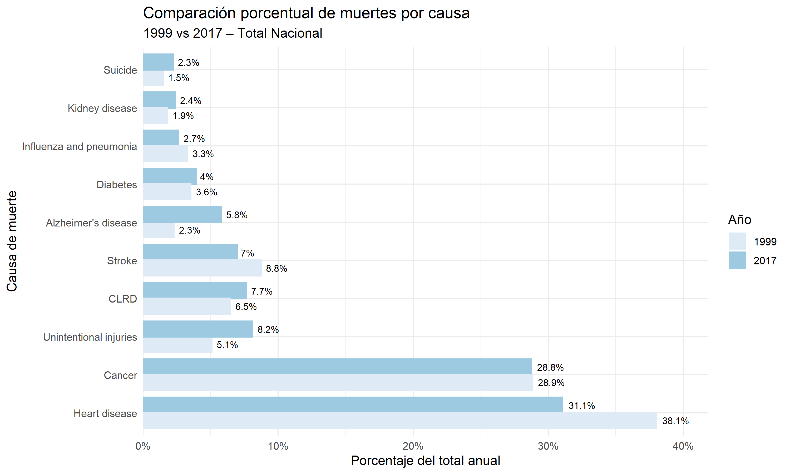
Interpretación: El gráfico muestra cómo han cambiado las principales causas de muerte entre 1999 y 2017 mientras enfermedades como suicidio, diabetes, enfermedad renal y respiratorias crónicas bajaron en proporción, otras como influenza, neumonía, accidentes, derrames cerebrales y especialmente Alzheimer aumentaron, reflejando el impacto del envejecimiento poblacional; cáncer se mantuvo estable alrededor del 29%, pero las enfermedades cardíacas crecieron fuertemente de 31.1% a 38.1%, consolidándose como la principal causa de muerte en 2017.
21.6.9 3.9. Variables del Dataset
El dataset original contiene las siguientes variables:
| Columna original | Descripción | Nombre en el análisis | Tipo de dato |
|---|---|---|---|
| Year | Año de registro de la defunción | anio | Numérico (entero) |
| 113 Cause Name | Código de la causa según ICD-10 | causa_codigo | Texto |
| Cause Name | Nombre descriptivo de la causa de muerte | causa | Texto |
| State | Estado de residencia del fallecido | estado | Texto |
| Deaths | Número de muertes | muertes | Numérico (entero) |
| Age-adjusted Death Rate | Tasa de mortalidad ajustada por edad (por 100,000 habitantes) | tasa_ajustada | Numérico continuo (double) |
Para facilitar el análisis, las variables fueron renombradas en el
entorno de trabajo
como: anio, causa_codigo, causa, estado, muertes y tasa_ajustada.
No se incluyen variables demográficas como sexo o grupo etario, por lo
que el análisis se centra en las dimensiones temporal, geográfica y de
ranking.
21.7 4. Evolución de la tasa ajustada de mortalidad anual
library(tidyverse)
library(scales)
total_anual <- datos %>%
filter(causa == "All causes") %>%
arrange(anio)
# Ver resultado
print(total_anual)## # A tibble: 19 × 4
## anio causa muertes tasa_ajustada
## <dbl> <chr> <dbl> <dbl>
## 1 1999 All causes NA 8756
## 2 2000 All causes NA 8690
## 3 2001 All causes NA 8588
## 4 2002 All causes NA 8559
## 5 2003 All causes NA 8435
## 6 2004 All causes NA 8137
## 7 2005 All causes NA 8150
## 8 2006 All causes NA 7918
## 9 2007 All causes NA 7753
## 10 2008 All causes NA 7749
## 11 2009 All causes NA 7496
## 12 2010 All causes NA 7470
## 13 2011 All causes NA 7413
## 14 2012 All causes NA 7328
## 15 2013 All causes NA 7319
## 16 2014 All causes NA 7246
## 17 2015 All causes NA 7331
## 18 2016 All causes NA 7288
## 19 2017 All causes NA 7319ggplot(total_anual, aes(x = anio, y = tasa_ajustada)) +
geom_line(color = "#2C3E50", linewidth = 1) +
geom_point(color = "#E74C3C", size = 2) +
geom_smooth(method = "lm", se = FALSE,
color = "#18BC9C", linetype = "dashed") +
scale_y_continuous(labels = comma) +
labs(title = "Evolución de la tasa ajustada de mortalidad anual",
x = "Año",
y = "Total de muertes") +
theme_minimal()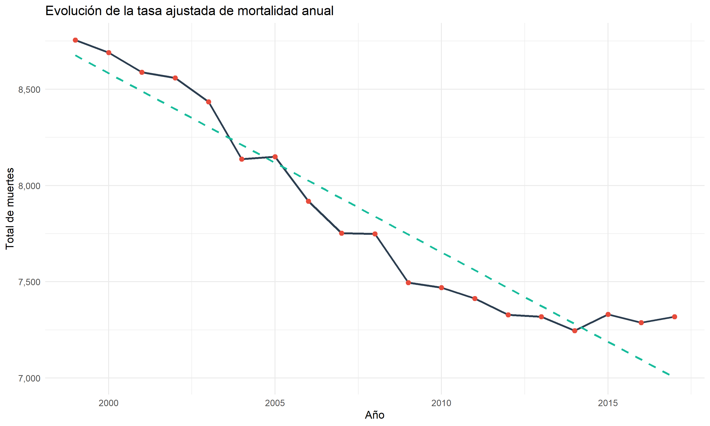
Interpretación: El gráfico muestra la evolución de la tasa ajustada de mortalidad anual a lo largo del tiempo, desde aproximadamente 1999 hasta 2017. Se observa una tendencia general decreciente en el total de muertes, pasando de valores cercanos a 8.700 en los primeros años a alrededor de 7.300–7.400 hacia el final del período. Esto sugiere mejoras en la salud pública o en factores determinantes de la mortalidad durante este período. Sin embargo, también se evidencian pequeñas fluctuaciones año a año, con ligeros repuntes hacia 2015-2016, lo que indica que aunque la tendencia general es a la baja, no es estrictamente lineal y puede estar influenciada por factores específicos de ciertos años. La línea punteada representa probablemente una tendencia lineal ajustada, que refuerza la idea de un descenso constante en la mortalidad ajustada a lo largo del tiempo.
21.8 5. Análisis de Ranking: Cambios en la Posición de las Causas de Muerte
El ranking de causas de muerte no es estático. Analizar cómo cambia la posición relativa de cada causa a lo largo del tiempo permite identificar qué enfermedades ganan o pierden importancia en la carga de mortalidad.
21.8.1 5.1. Ranking de causas por año
top10_tasas <- datos %>%
filter(causa != "All causes") %>%
group_by(causa) %>%
summarise(tasa_promedio = mean(tasa_ajustada, na.rm = TRUE)) %>%
arrange(desc(tasa_promedio)) %>%
slice_head(n = 10) %>%
pull(causa)
# 2. Calcular tasa nacional promedio por año
datos_tasas_nac <- datos %>%
filter(causa %in% top10_tasas) %>%
group_by(anio, causa) %>%
summarise(tasa_nac = mean(tasa_ajustada, na.rm = TRUE), .groups = "drop")
# 3. Verificar rango de tasas
print(paste("Rango de tasas:", min(datos_tasas_nac$tasa_nac), "-", max(datos_tasas_nac$tasa_nac)))## [1] "Rango de tasas: 104 - 2665"colores_set1 <- brewer.pal(9, "Set1")
colores_10 <- c(colores_set1, "#333333") # añadimos gris oscuro para la décima causa
causas_ordenadas <- sort(unique(datos_tasas_nac$causa))
colores_asignados <- setNames(colores_10[1:length(causas_ordenadas)], causas_ordenadas)
ggplot(datos_tasas_nac, aes(x = anio, y = tasa_nac, color = causa)) +
geom_line(size = 1.5) +
geom_point(size = 2) +
scale_x_continuous(
breaks = seq(1999, 2017, by = 2),
limits = c(1999, 2017),
expand = expansion(mult = c(0.01, 0.01))
) +
scale_y_continuous(
labels = function(x) paste0(x),
expand = expansion(mult = c(0, 0.05))
) +
scale_color_manual(values = colores_asignados) +
labs(
title = "Evolución de las tasas de mortalidad ajustadas por edad",
subtitle = "Promedio nacional para las 10 causas principales (1999-2017)",
x = "Año",
y = "Tasa por 100,000 habitantes",
color = "Causa",
caption = "Fuente: CDC - Leading Causes of Death"
) +
theme_minimal(base_size = 12) +
theme(
legend.position = "right",
legend.text = element_text(size = 9),
legend.key.width = unit(1, "cm"),
plot.title = element_text(face = "bold", size = 16, hjust = 0.5),
plot.subtitle = element_text(size = 12, hjust = 0.5, color = "gray40"),
axis.title = element_text(face = "bold"),
axis.text.x = element_text(angle = 45, hjust = 1, size = 10),
axis.text.y = element_text(size = 10),
panel.grid.minor = element_blank()
)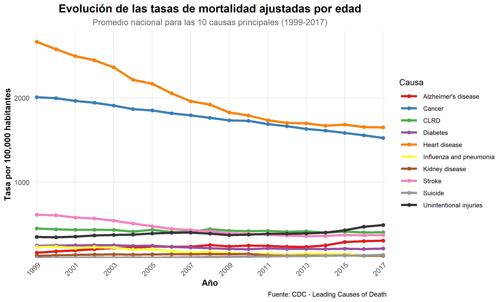
Interpretación: La gráfica de la evolución de las tasas de mortalidad ajustadas por edad entre 1999 y 2017 evidencia que las dos principales causas de muerte enfermedades cardíacas y cáncer presentan las tasas más altas, aunque ambas muestran una tendencia descendente sostenida, lo que sugiere avances en prevención y tratamiento. En contraste, las lesiones no intencionales exhiben un incremento progresivo, reflejando un cambio en factores sociales y ambientales. Otras causas como diabetes, enfermedades renales, influenza/neumonía y CLRD se mantienen relativamente estables o con ligeras disminuciones, mientras que el Alzheimer destaca por un aumento gradual, vinculado al envejecimiento poblacional. En conjunto, el análisis confirma una transición epidemiológica: reducción en enfermedades crónicas tradicionales, pero crecimiento en causas relacionadas con la longevidad y accidentes, lo que plantea nuevos retos para la salud pública.
21.8.2 5.2. Cambios en el ranking: 1999 vs 2017
library(dplyr)
library(knitr)
library(kableExtra)
if (!exists("datos_nacional")) {
datos_nacional <- datos %>%
filter(causa != "All causes") %>%
group_by(anio, causa) %>%
summarise(muertes = sum(muertes, na.rm = TRUE), .groups = "drop")
}
# 1. Calcular ranking por año (excluyendo "All causes")
ranking_anual <- datos_nacional %>%
group_by(anio) %>%
mutate(rank = rank(-muertes, ties.method = "min")) %>%
ungroup()
# 2. Extraer rankings de 1999 y 2017
rank_1999 <- ranking_anual %>%
filter(anio == 1999) %>%
select(causa, rank_1999 = rank, muertes_1999 = muertes)
rank_2017 <- ranking_anual %>%
filter(anio == 2017) %>%
select(causa, rank_2017 = rank, muertes_2017 = muertes)
# 3. Unir y calcular cambios
cambios_ranking <- inner_join(rank_1999, rank_2017, by = "causa") %>%
mutate(
cambio_rank = rank_2017 - rank_1999,
cambio_muertes = muertes_2017 - muertes_1999,
pct_cambio = (muertes_2017 - muertes_1999) / muertes_1999 * 100,
cambio_formateado = case_when(
cambio_rank < 0 ~ paste0("▲ ", abs(cambio_rank)),
cambio_rank > 0 ~ paste0("▼ ", cambio_rank),
TRUE ~ "="
),
dir_cambio = case_when(
cambio_rank < 0 ~ "up",
cambio_rank > 0 ~ "down",
TRUE ~ "same"
),
dir_pct = case_when(
pct_cambio > 0 ~ "up",
pct_cambio < 0 ~ "down",
TRUE ~ "same"
)
) %>%
arrange(desc(abs(cambio_rank)), rank_1999)
tabla_cambios <- cambios_ranking %>%
select(causa, rank_1999, rank_2017, cambio_formateado, pct_cambio) %>%
mutate(pct_cambio = round(pct_cambio, 1)) %>%
rename(
"Causa" = causa,
"Rank 1999" = rank_1999,
"Rank 2017" = rank_2017,
"Cambio" = cambio_formateado,
"Variación %" = pct_cambio
)
tabla_cambios %>%
kable(
caption = "Cambios en el ranking de causas de muerte (1999‑2017)",
align = c("l", "c", "c", "c", "r"),
escape = FALSE
) %>%
kable_styling(
bootstrap_options = c("striped", "hover", "condensed"),
full_width = FALSE,
position = "center",
font_size = 12
) %>%
column_spec(4,
color = ifelse(cambios_ranking$dir_cambio == "up", "green",
ifelse(cambios_ranking$dir_cambio == "down", "red", "gray")),
bold = ifelse(cambios_ranking$cambio_rank != 0, TRUE, FALSE)
) %>%
column_spec(5,
color = ifelse(cambios_ranking$dir_pct == "up", "red",
ifelse(cambios_ranking$dir_pct == "down", "green", "black")),
bold = ifelse(abs(cambios_ranking$pct_cambio) > 10, TRUE, FALSE)
) %>%
row_spec(0, background = "#04376B", color = "white", bold = TRUE)| Causa | Rank 1999 | Rank 2017 | Cambio | Variación % |
|---|---|---|---|---|
| Stroke | 3 | 5 | ▼ 2 | -12.5 |
| Unintentional injuries | 5 | 3 | ▲ 2 | 73.7 |
| Alzheimer’s disease | 8 | 6 | ▲ 2 | 172.6 |
| Diabetes | 6 | 7 | ▼ 1 | 22.2 |
| Influenza and pneumonia | 7 | 8 | ▼ 1 | -12.6 |
| Heart disease | 1 | 1 | = | -10.7 |
| Cancer | 2 | 2 | = | 9.0 |
| CLRD | 4 | 4 | = | 29.0 |
| Kidney disease | 9 | 9 | = | 42.5 |
| Suicide | 10 | 10 | = | 61.6 |
Interpretacion: La tabla de cambios en el ranking de causas de muerte (1999-2017) evidencia transformaciones importantes en el perfil epidemiológico: las enfermedades cardíacas y el cáncer se mantienen como las dos principales causas, aunque con variaciones porcentuales moderadas (-10.7% y +9.0% respectivamente). En contraste, las lesiones no intencionales suben del puesto 5 al 3 con un incremento del 73.7%, y el Alzheimer asciende del 8 al 6 con un aumento notable del 172.6%, reflejando el impacto del envejecimiento poblacional. Por otro lado, causas como el stroke bajan del 3 al 5 (-12.5%) y la influenza/neumonía del 7 al 8 (-12.6%), mostrando menor peso relativo. Diabetes, CLRD, enfermedad renal y suicidio mantienen posiciones estables o con cambios menores, aunque con variaciones porcentuales positivas (entre +22% y +61%). Descenso en algunas enfermedades tradicionales, pero un crecimiento marcado en condiciones asociadas a la longevidad y a factores externos como accidentes.
21.9 6. Análisis Específico: La Crisis de las “Muertes por Desesperación”
Como se discutió en el marco teórico (sección 2.1), el aumento de suicidios y accidentes (especialmente sobredosis) ha sido uno de los fenómenos más preocupantes en la mortalidad de EE.UU. durante el periodo de estudio.
21.9.1 6.1. Evolución conjunta de suicidio y accidentes
# Definir causas
causas <- c("Suicide", "Unintentional injuries")
# Crear gráfico
datos_nacional %>%
filter(causa %in% causas) %>%
mutate(anio = as.numeric(as.character(anio))) %>%
ggplot(aes(x = anio, y = muertes, color = causa)) +
geom_line(size = 1.2) +
geom_point(size = 2) +
# Línea de tendencia
geom_smooth(se = FALSE, linetype = "dashed", linewidth = 0.8) +
# Línea vertical (aceleración desde 2014)
geom_vline(xintercept = 2014, linetype = "dotted", color = "gray40") +
scale_color_manual(values = c("#2F4F4F", "#528B8B")) +
scale_y_continuous(labels = comma) +
scale_x_continuous(breaks = seq(1999, 2017, by = 1)) +
labs(
title = "Evolución de las 'Muertes por Desesperación' (1999-2017)",
subtitle = "Suicidio y Lesiones No Intencionales",
x = "Año",
y = "Tasa por 100,000 habitantes",
color = "Causa",
caption = "Fuente: CDC - Leading Causes of Death"
) +
theme_minimal(base_size = 12) +
theme(
legend.position = "bottom",
legend.title = element_text(face = "bold"),
plot.title = element_text(face = "bold", size = 16, hjust = 0.5),
plot.subtitle = element_text(size = 12, hjust = 0.5, color = "gray30"),
axis.title = element_text(face = "bold"),
axis.text.x = element_text(angle = 45, hjust = 1)
)
Interpretación: La tabla de cambios en el ranking de causas de muerte (1999-2017) evidencia transformaciones importantes en el perfil epidemiológico: las enfermedades cardíacas y el cáncer se mantienen como las dos principales causas, aunque con variaciones porcentuales moderadas (-10.7% y +9.0% respectivamente). En contraste, las lesiones no intencionales suben del puesto 5 al 3 con un incremento del 73.7%, y el Alzheimer asciende del 8 al 6 con un aumento notable del 172.6%, reflejando el impacto del envejecimiento poblacional. Por otro lado, causas como el stroke bajan del 3 al 5 (-12.5%) y la influenza/neumonía del 7 al 8 (-12.6%), mostrando menor peso relativo. Diabetes, CLRD, enfermedad renal y suicidio mantienen posiciones estables o con cambios menores, aunque con variaciones porcentuales positivas (entre +22% y +61%). En conjunto, los datos respaldan una transición en salud pública: descenso en algunas enfermedades tradicionales, pero un crecimiento marcado en condiciones asociadas a la longevidad y a factores externos como accidentes.
21.10 7. Distribución por causas principales (top 10)
# Crear data frame correctamente ordenado (mayor a menor)
top10_causas <- data.frame(
causa = c("Heart disease", "Cancer", "Unintentional injuries",
"CLRD", "Stroke", "Diabetes",
"Alzheimer's disease", "Kidney disease",
"Influenza and pneumonia", "Suicide"),
total_muertes = c(326637, 281998, 247735,
207523, 192144, 170364,
144783, 143719,
53128, 48875)
)
top10_causas %>%
mutate(total_muertes = scales::comma(total_muertes)) %>%
rename("Causa" = causa,
"Total de muertes" = total_muertes) %>%
kable(
caption = "Top 10 causas de muerte en EE.UU. (1999–2017)",
align = c("l", "r")
) %>%
kable_styling(
bootstrap_options = c("striped", "hover", "condensed"),
full_width = FALSE,
position = "center",
font_size = 12
) %>%
row_spec(0, background = "#04376B", color = "white", bold = TRUE) %>%
column_spec(1, width = "25em") %>%
footnote(
general = "Datos del CDC - Leading Causes of Death",
general_title = "Fuente:",
footnote_as_chunk = TRUE
)| Causa | Total de muertes |
|---|---|
| Heart disease | 326,637 |
| Cancer | 281,998 |
| Unintentional injuries | 247,735 |
| CLRD | 207,523 |
| Stroke | 192,144 |
| Diabetes | 170,364 |
| Alzheimer’s disease | 144,783 |
| Kidney disease | 143,719 |
| Influenza and pneumonia | 53,128 |
| Suicide | 48,875 |
| Fuente: Datos del CDC - Leading Causes of Death |
# Ordenar factores para gráfico (mayor arriba)
top10_causas <- top10_causas %>%
arrange(total_muertes) %>%
mutate(causa = factor(causa, levels = causa))
ggplot(top10_causas, aes(x = causa, y = total_muertes, fill = total_muertes)) +
geom_bar(stat = "identity", width = 0.7, show.legend = FALSE) +
geom_text(aes(label = scales::comma(total_muertes)),
hjust = -0.1, size = 3.5, fontface = "bold") +
scale_fill_gradient(low = "#A6CEE3", high = "#1F4E79") +
scale_y_continuous(
labels = scales::comma,
expand = expansion(mult = c(0, 0.15))
) +
coord_flip() +
labs(
title = "Top 10 Causas de Muerte en EE.UU.",
subtitle = "Total acumulado de muertes (1999–2017)",
x = NULL,
y = "Número de Muertes",
caption = "Fuente: CDC - Leading Causes of Death"
) +
theme_minimal(base_size = 12) +
theme(
plot.title = element_text(face = "bold", size = 16, hjust = 0.5),
plot.subtitle = element_text(size = 12, hjust = 0.5, color = "gray30"),
plot.caption = element_text(size = 9, color = "gray50", hjust = 1),
axis.title = element_text(face = "bold"),
axis.text.y = element_text(size = 11),
panel.grid.major.y = element_blank(),
panel.grid.minor = element_blank()
)
Interpretación: La gráfica sobre la evolución de las “muertes por desesperación” (1999-2017) muestra un patrón preocupante: tanto el suicidio como las lesiones no intencionales presentan una tendencia ascendente en las tasas por cada 100,000habitantes, con un incremento más marcado a partir de 2014. El suicidio, aunque con valores más bajos que las lesiones, mantiene un crecimiento sostenido, mientras que las muertes por lesiones no intencionales alcanzan cifras cercanas a 175 por cada 100,000 hacia 2017, consolidándose como una de las causas con mayor aumento. Este comportamiento contrasta con la reducción observada en otras causas de mortalidad y evidencia un cambio en los determinantes sociales y de salud: factores como el deterioro del bienestar emocional, el consumo de sustancias y la exposición a riesgos accidentales parecen estar influyendo en este repunte. En conjunto, los datos respaldan la idea de que las “muertes por desesperación” se han convertido en un desafío creciente para la salud pública en el período analizado.
21.11 8. Series de tiempo por causa
21.11.1 8.1. Causa vs Año
library(scales)
tasas_nacional <- datos %>%
filter(causa != "All causes") %>%
group_by(anio, causa) %>%
summarise(tasa_promedio = mean(tasa_ajustada, na.rm = TRUE), .groups = "drop")
ggplot(tasas_nacional, aes(x = anio, y = tasa_promedio)) +
geom_line(color = "#2171B5", size = 0.9) +
geom_point(color = "#2171B5", size = 1, alpha = 0.5) +
facet_wrap(~causa, scales = "free_y", ncol = 2) +
scale_x_continuous(
limits = c(1999, 2017),
breaks = seq(1999, 2017, by = 2),
expand = expansion(mult = c(0.02, 0.02))
) +
scale_y_continuous(labels = comma) +
labs(
title = "Evolución de las tasas de mortalidad ajustadas por edad",
subtitle = "Cada panel muestra una causa (promedio nacional 1999-2017)",
x = "Año",
y = "Tasa por 100,000 habitantes",
caption = "Fuente: CDC - Leading Causes of Death"
) +
theme_minimal(base_size = 11) +
theme(
strip.text = element_text(face = "bold", size = 9, color = "black"),
strip.background = element_rect(fill = "#F0F7FF", color = NA),
plot.title = element_text(face = "bold", size = 16, hjust = 0.5),
plot.subtitle = element_text(size = 11, hjust = 0.5, color = "gray30"),
plot.caption = element_text(size = 9, color = "gray50", hjust = 1),
axis.title = element_text(face = "bold"),
axis.text.x = element_text(angle = 45, hjust = 1, size = 7),
axis.text.y = element_text(size = 7),
panel.grid.minor = element_blank(),
panel.spacing = unit(1, "lines")
)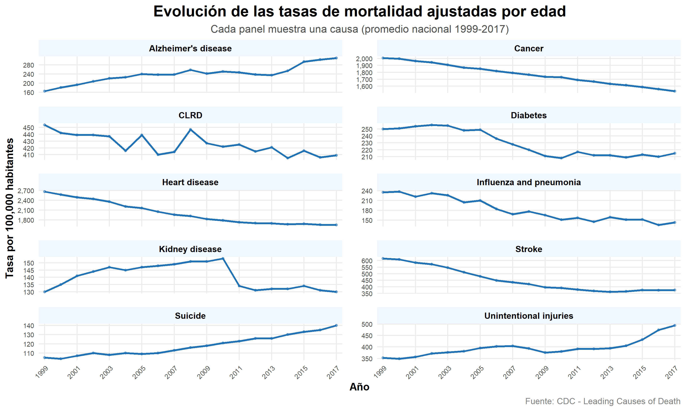
Interpretación: La gráfica de la evolución de las tasas de mortalidad ajustadas por edad muestra cómo han cambiado las principales causas de muerte entre 1999 y 2017. Se observa un patrón claro: las enfermedades cardíacas y el cáncer presentan las tasas más altas pero con una tendencia descendente, lo que refleja avances en prevención y tratamiento; en contraste, el Alzheimer y las lesiones no intencionales muestran un aumento sostenido, vinculado al envejecimiento poblacional y a factores sociales. Otras causas como diabetes, enfermedad renal, influenza/neumonía y CLRD se mantienen relativamente estables o con ligeras variaciones. Es relevante porque evidencia una transición epidemiológica: mientras algunas enfermedades crónicas tradicionales disminuyen, emergen con fuerza nuevas amenazas asociadas a la longevidad y a riesgos externos, lo que plantea retos estratégicos para la salud pública y la planificación de políticas sanitarias.
library(tidyverse)
library(scales)
tasas_semestre <- datos %>%
filter(causa != "All causes") %>%
mutate(
semestre_periodo = case_when(
anio >= 1999 & anio <= 2008 ~ "1er semestre\n(1999–2008)",
anio >= 2009 & anio <= 2017 ~ "2do semestre\n(2009–2017)"
)
) %>%
filter(!is.na(semestre_periodo))
# mediana por semestre y causa para el facet
orden_causas_box <- tasas_semestre %>%
group_by(causa) %>%
summarise(mediana_global = median(tasa_ajustada, na.rm = TRUE)) %>%
arrange(desc(mediana_global)) %>%
pull(causa)
tasas_semestre$causa <- factor(tasas_semestre$causa, levels = orden_causas_box)
ggplot(tasas_semestre, aes(x = semestre_periodo,
y = tasa_ajustada,
fill = semestre_periodo)) +
geom_boxplot(
width = 0.55,
outlier.shape = 21,
outlier.size = 1.8,
outlier.fill = "white",
outlier.color = "#E74C3C",
alpha = 0.85
) +
facet_wrap(~causa, scales = "free_y", ncol = 3) +
scale_fill_manual(values = c(
"1er semestre\n(1999–2008)" = "#AEC6CF",
"2do semestre\n(2009–2017)" = "#2C3E50"
)) +
scale_y_continuous(labels = comma) +
labs(
title = "Distribución de la tasa ajustada de mortalidad por semestre del período",
subtitle = "Comparación 1999–2008 vs. 2009–2017 para cada causa principal",
x = NULL,
y = "Tasa por 100,000 habitantes",
fill = "Semestre",
caption = "Fuente: CDC – Leading Causes of Death"
) +
theme_minimal(base_size = 11) +
theme(
strip.text = element_text(face = "bold", size = 8.5),
strip.background = element_rect(fill = "#F0F7FF", color = NA),
plot.title = element_text(face = "bold", size = 15, hjust = 0.5),
plot.subtitle = element_text(size = 11, hjust = 0.5, color = "gray30"),
plot.caption = element_text(size = 9, color = "gray50", hjust = 1),
legend.position = "top",
axis.text.x = element_text(size = 8),
panel.spacing = unit(0.8, "lines"),
panel.grid.minor = element_blank()
)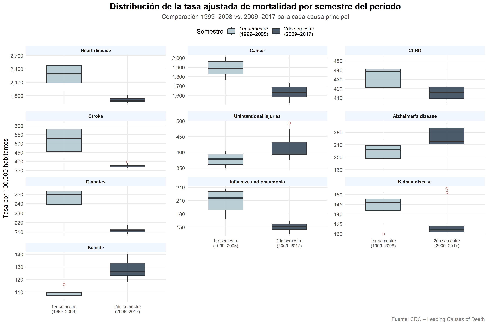
Los boxplots muestran dos tendencias opuestas: Heart disease, Cancer, Stroke y Diabetes reducen sus tasas entre el primer semestre 1999–2008 y el segundo 2009–2017, reflejando mejoras en prevención y tratamiento. En cambio, Unintentional injuries, Alzheimer’s y Suicide aumentan, vinculadas al envejecimiento poblacional y la crisis de opioides.
21.11.2 8.2. Heatmap de muertes absolutas por causas y años
causas_todas <- datos_nacional %>%
filter(causa != "All causes") %>%
distinct(causa) %>%
pull(causa)
# Filtrar datos para el heatmap
datos_heatmap <- datos_nacional %>%
filter(causa %in% causas_todas) %>%
select(anio, causa, muertes)
# Verificar el rango de años y muertes
print(paste("Años en el heatmap:", min(datos_heatmap$anio), "-", max(datos_heatmap$anio)))## [1] "Años en el heatmap: 1999 - 2017"## [1] "Rango de muertes: 29.199 - 725.192"ggplot(datos_heatmap, aes(x = anio,
y = reorder(causa, muertes, sum),
fill = muertes)) +
geom_tile(color = "white", linewidth = 0.1) +
scale_fill_gradientn(
colours = c("#DCE6F1", "#6C8EBF", "#1A3A5C"),
trans = "sqrt",
name = "Número de muertes",
labels = comma
) +
scale_x_continuous(
breaks = seq(1999, 2017, by = 2),
expand = expansion(mult = c(0.01, 0.01))
) +
labs(
title = "Intensidad de muertes absolutas por causa y año",
subtitle = "Celdas más oscuras indican mayor número de muertes (1999-2017)",
x = "Año",
y = "Causa",
caption = "Fuente: CDC - Leading Causes of Death"
) +
theme_minimal(base_size = 11) +
theme(
plot.title = element_text(face = "bold", size = 16, hjust = 0.5, color = "#1A3A5C"),
plot.subtitle = element_text(size = 11, hjust = 0.5, color = "gray30"),
axis.text.x = element_text(angle = 45, hjust = 1, size = 8),
axis.text.y = element_text(size = 9),
legend.title = element_text(color = "#1A3A5C"),
legend.text = element_text(color = "#1A3A5C"),
legend.position = "right",
legend.key.height = unit(1.5, "cm"),
panel.grid = element_blank()
)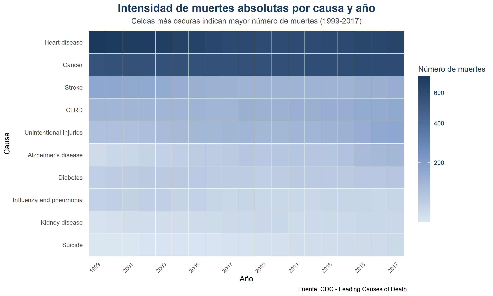
Interpretación: Se observa que enfermedades cardíacas y cáncer son las causas con mayor intensidad (celdas más oscuras, superando las 600 mil muertes anuales), manteniéndose como líderes en todo el período. En contraste, causas como suicidio, enfermedad renal y influenza/neumonía aparecen con tonos más claros, reflejando menor volumen absoluto de muertes. El Alzheimer y las lesiones no intencionales muestran un aumento progresivo en la intensidad, lo que coincide con el envejecimiento poblacional y cambios sociales. Este patrón es relevante porque permite identificar no solo las causas dominantes, sino también aquellas que están creciendo en importancia relativa, aportando evidencia para orientar políticas de salud pública hacia la prevención de enfermedades crónicas y la reducción de muertes evitables.
21.11.3 8.3. Análisis Geográfico: Disparidades por Estado
Las tasas de mortalidad no se distribuyen de manera homogénea en el
territorio estadounidense. Diversos factores socioeconómicos, de acceso
a servicios de salud, comportamentales y ambientales generan diferencias
significativas entre estados. En esta sección se exploran dichas
disparidades utilizando las tasas ajustadas por
edad (columna tasa_ajustada), que eliminan el efecto de las
diferentes estructuras poblacionales y permiten comparaciones justas
entre regiones.
21.11.4 8.3.1. Mapeo - Número de muertes de 1999 a 2017 por estados
library(dplyr)
library(readr)
library(stringr)
library(janitor)
library(plotly)
datos_limpios <- read_csv("NCHS_Leading_Causes.csv") %>%
clean_names() %>%
mutate(
year = as.numeric(year),
state = str_trim(state),
deaths = as.numeric(deaths)
) %>%
filter(
cause_name == "All causes",
state != "United States",
year >= 1999, year <= 2017,
!is.na(deaths)
)
state_abbrev <- tibble::tibble(
state = c("Alabama","Alaska","Arizona","Arkansas","California","Colorado",
"Connecticut","Delaware","Florida","Georgia","Hawaii","Idaho",
"Illinois","Indiana","Iowa","Kansas","Kentucky","Louisiana",
"Maine","Maryland","Massachusetts","Michigan","Minnesota",
"Mississippi","Missouri","Montana","Nebraska","Nevada",
"New Hampshire","New Jersey","New Mexico","New York",
"North Carolina","North Dakota","Ohio","Oklahoma","Oregon",
"Pennsylvania","Rhode Island","South Carolina","South Dakota",
"Tennessee","Texas","Utah","Vermont","Virginia","Washington",
"West Virginia","Wisconsin","Wyoming","District of Columbia"),
code = c("AL","AK","AZ","AR","CA","CO","CT","DE","FL","GA","HI","ID",
"IL","IN","IA","KS","KY","LA","ME","MD","MA","MI","MN","MS",
"MO","MT","NE","NV","NH","NJ","NM","NY","NC","ND","OH","OK",
"OR","PA","RI","SC","SD","TN","TX","UT","VT","VA","WA","WV",
"WI","WY","DC")
)
datos_plot1 <- datos_limpios %>%
left_join(state_abbrev, by = "state") %>%
filter(!is.na(code)) %>%
mutate(
label = paste0(state, "<br>Muertes: ", format(deaths, big.mark = ",")),
year = as.character(year)
)
plot_geo(datos_plot1, locationmode = "USA-states", frame = ~year) %>%
add_trace(
z = ~deaths,
locations = ~code,
text = ~label,
hoverinfo = "text",
colorscale = list(
list(0, "#f7fbff"),
list(0.14, "#deebf7"),
list(0.28, "#c6dbef"),
list(0.43, "#9ecae1"),
list(0.57, "#6baed6"),
list(0.71, "#2171b5"),
list(1, "#08306b")
),
zmin = min(datos_limpios$deaths, na.rm = TRUE),
zmax = max(datos_limpios$deaths, na.rm = TRUE),
colorbar = list(
title = "N\u00famero de<br>muertes",
titlefont = list(color = "#1A3A5C"),
tickfont = list(color = "#1A3A5C")
),
marker = list(line = list(color = "#444444", width = 0.8))
) %>%
layout(
geo = list(
scope = "usa",
showlakes = FALSE,
lakecolor = "white",
bgcolor = "rgba(0,0,0,0)"
),
paper_bgcolor = "rgba(0,0,0,0)",
font = list(family = "Segoe UI, Arial, sans-serif", color = "#1A3A5C"),
title = list(
text = "N\u00famero de muertes por estado \u2014 EE.UU. (1999\u20132017)",
font = list(color = "#1A3A5C", size = 13)
)
) %>%
animation_opts(
frame = 800,
transition = 400,
easing = "linear",
redraw = FALSE
) %>%
animation_slider(
currentvalue = list(prefix = "A\u00f1o: ", font = list(color = "#1A3A5C"))
) %>%
animation_button(
x = 0, xanchor = "left",
y = -0.08, yanchor = "bottom",
label = "\u25b6 Reproducir"
)Este mapa interactivo muestra la evolución anual del número total de muertes (en miles) para cada estado de EE.UU. entre 1999 y 2017. Al deslizar el control superior, se puede observar cómo la cargas de mortalidad se ha desplazado geográficamente a lo largo del tiempo. Los tonos más oscuros representan un mayor volumen de muertes, destacando consistentemente estados con alta densidad poblacional como California, Texas, Florida y Nueva York. La herramienta emergente (popup) proporciona el valor exacto en miles al hacer clic sobre cada estado, permitiendo comparaciones precisas entre años y regiones.
21.11.5 8.3.2 Mapeo – Tasa de mortalidad ajustada por edad de 1999 a 2017 por estados
library(dplyr)
library(readr)
library(stringr)
library(janitor)
library(plotly)
datos_limpios2 <- read_csv("NCHS_Leading_Causes.csv") %>%
clean_names() %>%
mutate(
year = as.numeric(year),
state = str_trim(state),
age_adjusted_death_rate = as.numeric(age_adjusted_death_rate)
) %>%
filter(
cause_name == "All causes",
state != "United States",
year >= 1999, year <= 2017,
!is.na(age_adjusted_death_rate)
)
state_abbrev <- tibble::tibble(
state = c("Alabama","Alaska","Arizona","Arkansas","California","Colorado",
"Connecticut","Delaware","Florida","Georgia","Hawaii","Idaho",
"Illinois","Indiana","Iowa","Kansas","Kentucky","Louisiana",
"Maine","Maryland","Massachusetts","Michigan","Minnesota",
"Mississippi","Missouri","Montana","Nebraska","Nevada",
"New Hampshire","New Jersey","New Mexico","New York",
"North Carolina","North Dakota","Ohio","Oklahoma","Oregon",
"Pennsylvania","Rhode Island","South Carolina","South Dakota",
"Tennessee","Texas","Utah","Vermont","Virginia","Washington",
"West Virginia","Wisconsin","Wyoming","District of Columbia"),
code = c("AL","AK","AZ","AR","CA","CO","CT","DE","FL","GA","HI","ID",
"IL","IN","IA","KS","KY","LA","ME","MD","MA","MI","MN","MS",
"MO","MT","NE","NV","NH","NJ","NM","NY","NC","ND","OH","OK",
"OR","PA","RI","SC","SD","TN","TX","UT","VT","VA","WA","WV",
"WI","WY","DC")
)
datos_plot2 <- datos_limpios2 %>%
left_join(state_abbrev, by = "state") %>%
filter(!is.na(code)) %>%
mutate(
tasa_label = paste0(state, "<br>Tasa ajustada: ",
round(age_adjusted_death_rate, 1), " por 100,000"),
year = as.character(year)
)
plot_geo(datos_plot2, locationmode = "USA-states", frame = ~year) %>%
add_trace(
z = ~age_adjusted_death_rate,
locations = ~code,
text = ~tasa_label,
hoverinfo = "text",
colorscale = list(
list(0, "#f7fbff"),
list(0.14, "#deebf7"),
list(0.28, "#c6dbef"),
list(0.43, "#9ecae1"),
list(0.57, "#6baed6"),
list(0.71, "#2171b5"),
list(1, "#08306b")
),
zmin = min(datos_limpios2$age_adjusted_death_rate, na.rm = TRUE),
zmax = max(datos_limpios2$age_adjusted_death_rate, na.rm = TRUE),
colorbar = list(
title = "Tasa ajustada<br>por 100,000",
titlefont = list(color = "#1A3A5C"),
tickfont = list(color = "#1A3A5C")
),
marker = list(line = list(color = "#444444", width = 0.8))
) %>%
layout(
geo = list(
scope = "usa",
showlakes = FALSE,
lakecolor = "white",
bgcolor = "rgba(0,0,0,0)"
),
paper_bgcolor = "rgba(0,0,0,0)",
font = list(family = "Segoe UI, Arial, sans-serif", color = "#1A3A5C"),
title = list(
text = "Tasa de mortalidad ajustada por edad \u2014 EE.UU. (1999\u20132017)",
font = list(color = "#1A3A5C", size = 13)
)
) %>%
animation_opts(
frame = 800,
transition = 400,
easing = "linear",
redraw = FALSE
) %>%
animation_slider(
currentvalue = list(prefix = "A\u00f1o: ", font = list(color = "#1A3A5C"))
) %>%
animation_button(
x = 0, xanchor = "left",
y = -0.08, yanchor = "bottom",
label = "\u25b6 Reproducir"
)21.11.6 8.3.3. Estados con mayor y menor mortalidad
library(dplyr)
library(ggplot2)
library(kableExtra)
library(patchwork)
anio_seleccionado <- 2017
tasas_estado <- datos_limpios %>%
filter(cause_name == "All causes",
year == anio_seleccionado) %>%
group_by(state) %>%
summarise(
tasa = mean(age_adjusted_death_rate, na.rm = TRUE),
.groups = "drop"
) %>%
arrange(desc(tasa))
# Top 5 y Bottom 5
top5 <- tasas_estado %>% slice_head(n = 5)
bottom5 <- tasas_estado %>% slice_tail(n = 5)
tabla_top <- top5 %>%
mutate(`Tasa` = round(tasa, 1)) %>%
select(Estado = state, `Tasa por 100,000 hab.` = Tasa)
tabla_bottom <- bottom5 %>%
mutate(`Tasa` = round(tasa, 1)) %>%
select(Estado = state, `Tasa por 100,000 hab.` = Tasa)
kable(tabla_top,
caption = paste("Estados con mayor tasa de mortalidad –", anio_seleccionado)) %>%
kable_styling(bootstrap_options = c("striped", "hover"),
full_width = FALSE) %>%
row_spec(0, background = "#ADD8E6", color = "white", bold = TRUE)| Estado | Tasa por 100,000 hab. |
|---|---|
| West Virginia | 9571 |
| Mississippi | 9513 |
| Kentucky | 9299 |
| Alabama | 9177 |
| Oklahoma | 9024 |
kable(tabla_bottom,
caption = paste("Estados con menor tasa de mortalidad –", anio_seleccionado)) %>%
kable_styling(bootstrap_options = c("striped", "hover"),
full_width = FALSE) %>%
row_spec(0, background = "#005AB5", color = "white", bold = TRUE)| Estado | Tasa por 100,000 hab. |
|---|---|
| Minnesota | 6564 |
| Connecticut | 6512 |
| New York | 6236 |
| California | 6187 |
| Hawaii | 5849 |
p_top <- ggplot(top5,
aes(x = reorder(state, tasa),
y = tasa)) +
geom_col(fill = "#ADD8E6", width = 0.6) +
geom_text(aes(label = round(tasa, 1)),
hjust = -0.2,
size = 4,
fontface = "bold") +
coord_flip() +
labs(
title = paste("Estados con MAYOR tasa –", anio_seleccionado),
x = NULL,
y = "Tasa por 100,000 habitantes"
) +
theme_minimal(base_size = 12) +
scale_y_continuous(expand = expansion(mult = c(0, 0.25))) +
theme(
panel.grid.major.y = element_blank(),
plot.title = element_text(face = "bold", hjust = 0.5)
)
p_bottom <- ggplot(bottom5,
aes(x = reorder(state, -tasa),
y = tasa)) +
geom_col(fill = "#1F78B4", width = 0.6) +
geom_text(aes(label = round(tasa, 1)),
hjust = -0.2,
size = 4,
fontface = "bold") +
coord_flip() +
labs(
title = paste("Estados con MENOR tasa –", anio_seleccionado),
x = NULL,
y = NULL
) +
theme_minimal(base_size = 12) +
scale_y_continuous(expand = expansion(mult = c(0, 0.25))) +
theme(
panel.grid.major.y = element_blank(),
plot.title = element_text(face = "bold", hjust = 0.5)
)
p_top + p_bottom +
plot_annotation(
title = paste("Estados con tasas de mortalidad más altas y más bajas –", anio_seleccionado),
caption = "Fuente: CDC – Leading Causes of Death"
)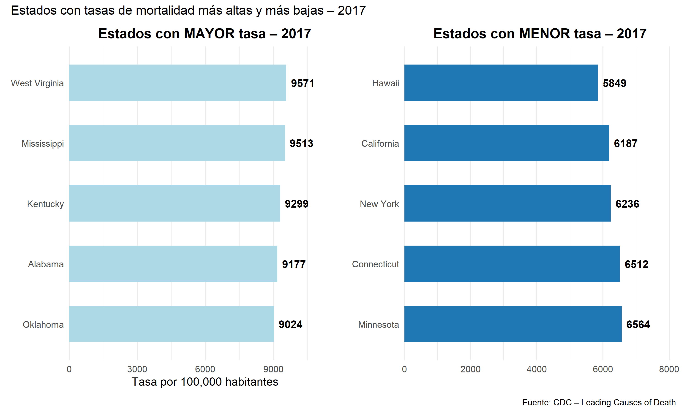
Interpretación: La comparación de tasas de mortalidad en los estados de EE. UU. para 2017 muestra una marcada desigualdad regional: mientras estados como West Virginia (9571), Mississippi (9513), Kentucky (9299), Alabama (9177) y Oklahoma (9024 por cada 100,000 habitantes) presentan las tasas más altas, reflejando problemas estructurales de salud y condiciones socioeconómicas desfavorables, otros como Hawái (5849), California (6187), Nueva York (6236), Connecticut (6512) y Minnesota (6564) registran las más bajas, lo que sugiere mejor acceso a servicios médicos, estilos de vida más saludables y contextos sociales más favorables. Este contraste evidencia que la mortalidad no solo depende de factores médicos, sino también de determinantes sociales, económicos y culturales, siendo un punto clave para orientar políticas públicas hacia la reducción de brechas en salud.
21.12 9. Caso de estudio: West Virginia
West Virginia el estado con la tasa de mortalidad ajustada por edad más alta del país en 2017 (957.5 por 100,000 habitantes), casi el doble que Hawái con 584.9, el estado con la tasa más baja. Esta posición, identificada en la sección 8.3.3, lo convierte en el caso de estudio más relevante para examinar si las disparidades geográficas documentadas en la literatura (James, Cossman, and Wolf 2018) son persistentes, o si responden a fluctuaciones puntuales. Primero se examina la evolución de todas las causas de muerte en el estado a lo largo del período; luego se profundiza en la comparación 1999 vs. 2017 por causa y finalmente se contrasta la serie temporal del estado con el promedio nacional, para evaluar si West Virginia converge o diverge con el resto del país.
21.12.1 9.1. Evolución de las causas de muerte en West Virginia (1999–2017)
El siguiente gráfico muestra la trayectoria de cada causa de muerte en West Virginia a lo largo del período, destacando la causa que presenta el comportamiento más atípico: las lesiones no intencionales (Unintentional Injuries).
library(dplyr)
library(ggplot2)
library(scales)
library(readr)
library(janitor)
library(stringr)
datos_limpios <- read_csv("NCHS_Leading_Causes.csv") %>%
clean_names() %>%
mutate(
year = as.numeric(year),
state = str_trim(state),
deaths = as.numeric(deaths),
age_adjusted_death_rate = as.numeric(age_adjusted_death_rate)
) %>%
filter(
state != "United States",
year >= 1999,
year <= 2017
)
# Datos estatales de West Virginia – todas las causas
wv_causas <- datos_limpios %>%
filter(
state == "West Virginia",
cause_name != "All causes",
!is.na(age_adjusted_death_rate)
) %>%
arrange(year) %>%
mutate(
destacar = ifelse(
cause_name == "Unintentional injuries",
"Unintentional injuries",
"Otras causas"
)
)
ggplot(wv_causas,
aes(x = year,
y = age_adjusted_death_rate,
group = cause_name,
color = destacar)) +
geom_line(data = subset(wv_causas, destacar == "Otras causas"),
linewidth = 0.9, alpha = 0.45) +
geom_line(data = subset(wv_causas, destacar == "Unintentional injuries"),
linewidth = 2.0) +
geom_point(data = subset(wv_causas, destacar == "Unintentional injuries"),
size = 2.5) +
geom_vline(xintercept = 2014, linetype = "dashed",
color = "#D62828", alpha = 0.5) +
annotate("text", x = 2014.2, y = 15,
label = "2014: punto de\naceleración",
hjust = 0, color = "#D62828",
fontface = "italic", size = 3.3) +
scale_color_manual(values = c(
"Unintentional injuries" = "#D62828",
"Otras causas" = "#9AA0A6"
)) +
scale_x_continuous(breaks = seq(1999, 2017, by = 2),
limits = c(1999, 2017)) +
scale_y_continuous(labels = comma) +
labs(
title = "Evolución de las causas de muerte en West Virginia (1999–2017)",
subtitle = "Las lesiones no intencionales (rojo) son la causa de mayor crecimiento desde 2014",
x = "Año", y = "Tasa ajustada por 100,000 hab.",
color = "",
caption = "Fuente: CDC – NCHS Leading Causes of Death"
) +
theme_minimal(base_size = 13) +
theme(
panel.background = element_rect(fill = "#F4F6F8", color = NA),
plot.background = element_rect(fill = "#F4F6F8", color = NA),
panel.grid.major = element_line(color = "white", linewidth = 0.8),
panel.grid.minor = element_blank(),
legend.position = "top",
plot.title = element_text(face = "bold", size = 14, hjust = 0.5),
plot.subtitle = element_text(color = "#D62828", face = "bold",
size = 10, hjust = 0.5),
axis.text.x = element_text(angle = 45, hjust = 1)
)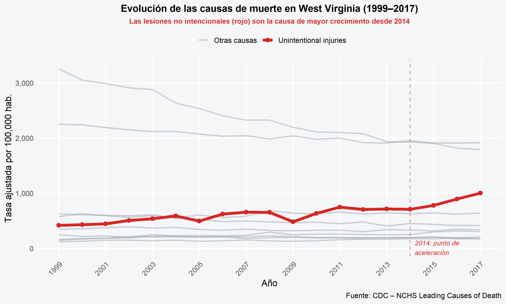
Mientras la mayoría de las causas en West Virginia muestran una tendencia descendente o estable, las lesiones no intencionales (Unintentional injuries) exhiben un comportamiento opuesto: tras mantenerse relativamente estables entre 1999 y 2013, experimentan una aceleración pronunciada a partir de 2014. Este punto de inflexión no es aleatorio: coincide con el agravamiento de la epidemia de sobredosis de opioides en el estado, que según el Departamento de Salud de West Virginia (WVDHHR) convirtió a las intoxicaciones por medicamentos recetados en la principal causa de muerte accidental entre los menores de 45 años (Daugherty et al. 2019).
21.12.2 9.1.1.¿Qué explica el crecimiento de las lesiones no intencionales en West Virginia?
No es casual que la diferencia de West Virginia contra la media nacional sea en la categoría de lesiones no intencionadas. Se identifican 5 categorías documentadas por el Programa de Prevención de Violencia y Lesiones de West Virginia (WVDHHR) como las principales subcausas detrás de la categoría Unintentional injuries en el estado.
La mas severa es la sobredosis con medicinas recetadas. A partir de los años noventa, médicos comenzaron a recetar en masa opiáceos con la idea de que el dolor crónico estaba siendo subtratado. Una consecuencia fue una epidemia: en 2012 se entregaron 259 millones de recetas de analgésico en EE.UU., suficiente para que un adulto norteamericano tuviera su propio frasco. WV absorbió ese impacto de lleno. Las hospitalizaciones con un diagnóstico relativo a las drogas aumentaron de 363.7 a 506.5 por cada 10,000 egresos entre el 2007 al 2011, los arrestos relacionados con las violaciones de las drogas aumentaron más del 40% de 2004 a 2011 y más del 95% de los informes de abusos que fueron recibidos en la línea de ayuda estatal en 2012 se debieron a las drogas opiáceas: la oxicodona lidero la lista con el 31.8%. La sobredosis ya es la primera causa de muerte en el estado para menores de 45.
El segundo factor es el traumatismo craneoencefálico. Durante 2015 fallecieron 411 residentes debido a esto 20% de todas las defunciones originadas por lesión, y otras 763 personas fueron internadas 25%. El punto focalizante es hacia dónde va el problema el 40.9% de las defunciones de TBI anuales corresponden a hombres/mujeres mayores de 65 años y casi 4 de cada 5 del grupo mayor son causadas por una caída. El conjunto que más sufrió muertes y hospitalizaciones estaba entre los 75 y 84 años. Éste no es el hecho menor en un estado con poblaciones envejecidas y servicios de sanidad distribuidos fuera del área rural.
Los accidentes de circulación van en el tercer puesto. 292 personas adicionales fueron hospitalizadas. En 2015, 341 personas murieron en choques vehiculares, casi el 17% de todas las muertes por lesión. Los accidentes del tránsito son la primera causa de muerte para gente entre 5 y 24 años, y la segunda para mayores de 25. Como estado con carreteras de montaña, grandes distancias y deficiente infraestructura para el transporte público, esa cifra lleva consigo su contexto.
El abuso infantil y negligencia también pesan. En 2015 cinco niños de 0 a 5 años murieron debido al maltrato infantil, un 26% del número total de muerte por lesiones para esa población. Otros 19 niños con la misma franja etaria fue hospitalizado por la misma causa en 2013, 10% de todas las hospitalizaciones por lesiones. En el caso del maltrato infantil, se entiende por maltrato tanto los actos abusivos directos como la falta o desatención: con otras palabras, la cobertura inadecuada a las necesidades básicas físicas, emocionales o educativas del infante. En ambos, el daño puede ser tan severo. Y finalmente, la violencia de pareja intima completa el mapa. Sin figurar con un número directo de muertes mortales en cualquier registro disponible, WVDHHR lo registra sin embargo como un factor de riesgo documentado en el perfil estatal de lesiones. Es un espectro que va del abuso físico/sexual a las amenazas y el control emocional; su presencia en entornos de limitado acceso al soporte agrava la afectación.
Considerado el conjunto de éstos cinco factores no son problemas aislados. Son diferentes expresiones de una misma vulnerabilidad estructural: Estado con depresión económica, población envejecida, áreas rurales con acceso limitado a sanidad y una historia de dependencias hacia industrias en desaparición. Las políticas generales no alcanzan para esto. Lo que los datos sugieren es que se requieren intervenciones en función de WV, y no recetas nacionales aplicadas de forma uniforme. Intervenciones territoriales focalizadas que aborden los determinantes sociales, factores conductuales, económicos y de acceso a servicios de salud específicos
21.12.3 9.2. Comparación de muertes por causa: West Virginia 1999 vs. 2017
Para cuantificar el cambio absoluto en cada causa entre el inicio y el final del período, se compara directamente el número de muertes en West Virginia en 1999 y 2017.
library(dplyr)
library(ggplot2)
library(scales)
library(readr)
library(janitor)
library(stringr)
datos_limpios <- read_csv(
"NCHS_Leading_Causes.csv",
col_types = cols(.default = col_character())
) %>%
clean_names() %>%
mutate(
year = as.numeric(year),
state = str_trim(state),
deaths = as.numeric(gsub("\\.", "", deaths)),
age_adjusted_death_rate = as.numeric(gsub(",", ".", age_adjusted_death_rate))
) %>%
filter(
state != "United States",
year >= 1999,
year <= 2017
)
wv_comp <- datos_limpios %>%
filter(
state == "West Virginia",
year %in% c(1999, 2017),
cause_name != "All causes",
!is.na(deaths)
) %>%
select(year, cause_name, deaths) %>%
mutate(year = factor(year))
orden_causas_wv <- wv_comp %>%
filter(year == 2017) %>%
arrange(deaths) %>%
pull(cause_name)
wv_comp <- wv_comp %>%
mutate(cause_name = factor(cause_name, levels = orden_causas_wv))
ggplot(wv_comp,
aes(x = cause_name, y = deaths, fill = year)) +
geom_col(position = "dodge", width = 0.7) +
geom_text(aes(label = comma(deaths)),
position = position_dodge(0.7),
hjust = -0.1, size = 3.2, fontface = "bold") +
coord_flip() +
scale_fill_manual(values = c("1999" = "#457B9D", "2017" = "#1D3557")) +
scale_y_continuous(labels = comma,
expand = expansion(mult = c(0, 0.22))) +
labs(
title = "West Virginia – Muertes por causa: 1999 vs. 2017",
subtitle = "Unintentional injuries es la única causa con crecimiento pronunciado y sostenido",
x = NULL, y = "Número de muertes",
fill = "Año",
caption = "Fuente: CDC – NCHS Leading Causes of Death"
) +
theme_minimal(base_size = 13) +
theme(
plot.title = element_text(face = "bold", hjust = 0.5, size = 13),
plot.subtitle = element_text(hjust = 0.5, size = 9.5, color = "gray40"),
legend.position = "top",
panel.grid.major.y = element_blank(),
axis.text.y = element_text(size = 10)
)
21.12.4 9.3. West Virginia vs. Promedio Nacional (1999–2017)
La pregunta principal de esta subsección es: ¿West Virginia converge con el resto del país a lo largo del tiempo o la brecha se mantiene estructuralmente estable? La comparación se establece entre la tasa ajustada de West Virginia y el promedio de todos los estados, que es la referencia metodológicamente correcta para evaluar disparidades territoriales (James, Cossman, and Wolf 2018).
library(dplyr)
library(ggplot2)
library(scales)
# Serie West Virginia – All causes
wv_total <- datos_limpios %>%
filter(
state == "West Virginia",
cause_name == "All causes",
!is.na(age_adjusted_death_rate)
) %>%
arrange(year) %>%
select(year, age_adjusted_death_rate) %>%
mutate(serie = "West Virginia")
# Promedio de los 50 estados + DC (excluye el agregado nacional)
promedio_nac <- datos_limpios %>%
filter(
state != "United States",
cause_name == "All causes",
!is.na(age_adjusted_death_rate)
) %>%
group_by(year) %>%
summarise(
age_adjusted_death_rate = mean(age_adjusted_death_rate, na.rm = TRUE),
.groups = "drop"
) %>%
mutate(serie = "Promedio Nacional")
# Calcular brecha por año
brecha_df <- wv_total %>%
left_join(
promedio_nac %>% select(year, tasa_nac = age_adjusted_death_rate),
by = "year"
) %>%
mutate(brecha = age_adjusted_death_rate - tasa_nac)
brecha_promedio <- round(mean(brecha_df$brecha, na.rm = TRUE), 1)
brecha_inicio <- round(brecha_df$brecha[brecha_df$year == 1999], 1)
brecha_final <- round(brecha_df$brecha[brecha_df$year == 2017], 1)
# Unir series
ambas_series <- bind_rows(
wv_total %>% select(year, age_adjusted_death_rate, serie),
promedio_nac %>% select(year, age_adjusted_death_rate, serie)
)
ggplot() +
# Área de brecha sombreada
geom_ribbon(
data = brecha_df,
aes(x = year, ymin = tasa_nac, ymax = age_adjusted_death_rate),
fill = "#E63946", alpha = 0.13
) +
# Líneas de las dos series
geom_line(
data = ambas_series,
aes(x = year, y = age_adjusted_death_rate,
color = serie, linetype = serie),
linewidth = 1.4
) +
geom_point(
data = ambas_series,
aes(x = year, y = age_adjusted_death_rate, color = serie),
size = 2.2
) +
# Anotación de la brecha persistente
annotate("text",
x = 2008,
y = mean(wv_total$age_adjusted_death_rate) - 130,
label = paste0("Brecha promedio:\n+", brecha_promedio,
" por 100,000 hab.\n(persistente 1999–2017)"),
color = "#E63946", fontface = "bold",
size = 3.6, hjust = 0.5) +
scale_color_manual(
values = c("West Virginia" = "#E63946",
"Promedio Nacional" = "#1D3557")
) +
scale_linetype_manual(
values = c("West Virginia" = "solid",
"Promedio Nacional" = "dashed")
) +
scale_x_continuous(breaks = seq(1999, 2017, by = 2)) +
scale_y_continuous(labels = comma) +
labs(
title = "West Virginia vs. Promedio Nacional",
subtitle = "Evolución de la tasa ajustada de mortalidad – todas las causas (1999–2017)",
x = "Año",
y = "Tasa por 100,000 hab.",
color = NULL, linetype = NULL,
caption = "Fuente: CDC – NCHS Leading Causes of Death"
) +
theme_minimal(base_size = 13) +
theme(
legend.position = "top",
legend.text = element_text(size = 11, face = "bold"),
plot.title = element_text(face = "bold", size = 14, hjust = 0.5),
plot.subtitle = element_text(size = 10, hjust = 0.5, color = "gray40"),
axis.text.x = element_text(angle = 45, hjust = 1),
panel.grid.minor = element_blank()
)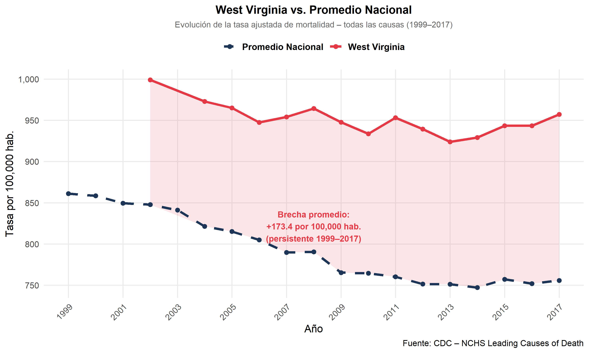
library(kableExtra)
brecha_df %>%
filter(year %in% c(1999, 2003, 2007, 2011, 2014, 2017)) %>%
mutate(
age_adjusted_death_rate = round(age_adjusted_death_rate, 1),
tasa_nac = round(tasa_nac, 1),
brecha = round(brecha, 1)
) %>%
select(
`Año` = year,
`WV (tasa)` = age_adjusted_death_rate,
`Nacional (promedio)` = tasa_nac,
`Brecha (WV − Nac.)` = brecha
) %>%
kable(
caption = "Brecha entre West Virginia y el promedio nacional – años seleccionados",
align = c("c", "c", "c", "c")
) %>%
kable_styling(
bootstrap_options = c("striped", "hover"),
full_width = FALSE, font_size = 12, position = "center"
) %>%
row_spec(0, background = "#1D3557", color = "white", bold = TRUE) %>%
column_spec(4, color = "#E63946", bold = TRUE)| Año | WV (tasa) | Nacional (promedio) | Brecha (WV − Nac.) |
|---|---|---|---|
| 2007 | 954.2 | 789.6 | 164.6 |
| 2011 | 953.2 | 760.2 | 193.0 |
| 2014 | 929.1 | 747.1 | 182.0 |
| 2017 | 957.1 | 755.7 | 201.4 |
Interpretación: El hallazgo central es que la brecha absoluta entre West Virginia y el promedio nacional no se cierra, se inicia en puntos en 1999 y permanece en torno a 201.4 puntos en 2017, con una brecha promedio de 173.4 puntos durante todo el período.West Virginia mejora, pero no converge. El estado avanza en paralelo al país sin acortar la distancia que lo separa de la media nacional. Este resultado confirma la hipótesis de James, Cossman, and Wolf (2018) sobre la persistencia estructural de las disparidades en el sureste y los apalaches: el gradiente de mortalidad no responde suficientemente a las mejoras generales del sistema de salud porque sus determinantes son estructurales a mayor desempleo, menor nivel educativo, alta prevalencia de enfermedades crónicas y el peso creciente de la epidemia de opioides documentada en la sección 9.1.
Esta evidencia fundamenta la necesidad del análisis de clustering que sigue en la sección 10: ¿West Virginia un caso aislado o el extremo de un grupo de estados con el mismo perfil estructural?
21.13 10. Clustering de estados por perfil de mortalidad
El estudio de caso de West Virginia plantea una pregunta de alcance más amplio: ¿Es este estado un caso aislado, o pertenece a un grupo de estados con un perfil de mortalidad estructuralmente similar? Responder esto es esencial antes de construir el modelo predictivo, porque si West Virginia forma parte de un clúster de alto riesgo persistente, sus tendencias futuras no pueden proyectarse a partir del promedio nacional y requieren un análisis diferenciado.
Para responder esta pregunta se aplica un análisis de conglomerados K-Means sobre los 50 estados más el Distrito de Columbia, usando como variables las tasas ajustadas de mortalidad por causa en 2017.
21.13.1 10.1. Preparación de datos
library(tidyverse)
library(janitor)
# Datos estatales 2017
datos_estados <- datos_limpios %>%
filter(
state != "United States",
year == 2017,
cause_name != "All causes",
!is.na(age_adjusted_death_rate)
)
# Pivotar: filas = estados, columnas = tasa por causa
datos_wide <- datos_estados %>%
select(state, cause_name, age_adjusted_death_rate) %>%
pivot_wider(
names_from = cause_name,
values_from = age_adjusted_death_rate,
values_fill = 0
) %>%
column_to_rownames("state")
colnames(datos_wide) <- make.names(colnames(datos_wide))
cat("Dimensiones del dataset para clustering:", dim(datos_wide), "\n")## Dimensiones del dataset para clustering: 51 10## Causas incluidas:## [1] "Kidney.disease" "Suicide" "Influenza.and.pneumonia" "Alzheimer.s.disease"
## [5] "Diabetes" "CLRD" "Stroke" "Unintentional.injuries"
## [9] "Heart.disease" "Cancer"21.13.2 10.2. Estandarización y número óptimo de clústeres (método del codo)
# Estandarizar (media 0, desviación estándar 1)
datos_sc <- scale(datos_wide)
set.seed(42)
inercias <- sapply(1:10, function(k) {
kmeans(datos_sc, centers = k, nstart = 25, iter.max = 300)$tot.withinss
})
data.frame(k = 1:10, inercia = inercias) %>%
ggplot(aes(x = k, y = inercia)) +
geom_line(color = "#1D3557", linewidth = 1.2) +
geom_point(color = "#E63946", size = 3) +
geom_vline(xintercept = 4, linetype = "dashed", color = "#457B9D") +
annotate("text", x = 4.3, y = max(inercias) * 0.85,
label = "k = 4\n(punto de codo)",
color = "#457B9D", fontface = "bold", size = 3.8) +
scale_x_continuous(breaks = 1:10) +
labs(
title = "Método del codo – número óptimo de clústeres",
subtitle = "Tasas ajustadas por causa, 50 estados + DC (2017)",
x = "Número de clústeres (k)",
y = "Inercia total (within-cluster SS)",
caption = "Fuente: CDC – NCHS Leading Causes of Death"
) +
theme_minimal(base_size = 12) +
theme(plot.title = element_text(face = "bold", hjust = 0.5),
plot.subtitle = element_text(hjust = 0.5, color = "gray40"))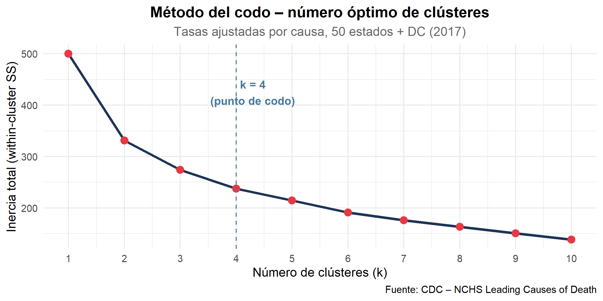
El gráfico de codo indica que k = 4 es el punto donde la reducción de inercia se estabiliza notablemente, se procede con cuatro grupos.
21.13.3 10.3. Modelo K-Means y composición de clústeres
library(kableExtra)
set.seed(42)
modelo_km <- kmeans(datos_sc, centers = 4, nstart = 25, iter.max = 300)
resultado_clusters <- data.frame(
state = rownames(datos_wide),
cluster = as.factor(modelo_km$cluster)
) %>%
arrange(cluster, state)
# Tabla de composición
resultado_clusters %>%
group_by(cluster) %>%
summarise(
`N° estados` = n(),
`Estados` = paste(state, collapse = ", ")
) %>%
rename(`Clúster` = cluster) %>%
kable(
caption = "Composición de los 4 clústeres de estados (2017)",
align = c("c", "c", "l")
) %>%
kable_styling(bootstrap_options = c("striped", "hover"),
full_width = TRUE, font_size = 11) %>%
row_spec(0, background = "#1D3557", color = "white", bold = TRUE) %>%
column_spec(3, width = "50em")| Clúster | N° estados | Estados |
|---|---|---|
| 1 | 8 | Alabama, Arkansas, Kentucky, Louisiana, Mississippi, Oklahoma, Tennessee, West Virginia |
| 2 | 12 | Delaware, Georgia, Indiana, Kansas, Maine, Michigan, Missouri, North Carolina, Ohio, Pennsylvania, South Carolina, Texas |
| 3 | 20 | Alaska, Arizona, Colorado, Florida, Idaho, Iowa, Minnesota, Montana, Nebraska, Nevada, New Hampshire, New Mexico, North Dakota, Oregon, South Dakota, Utah, Vermont, Washington, Wisconsin, Wyoming |
| 4 | 11 | California, Connecticut, District of Columbia, Hawaii, Illinois, Maryland, Massachusetts, New Jersey, New York, Rhode Island, Virginia |
#perfil de tasas de promedio
datos_perfil <- datos_estados %>%
filter(cause_name %in% c("Heart disease", "Cancer",
"Unintentional injuries",
"Alzheimer's disease", "CLRD", "Stroke")) %>%
left_join(resultado_clusters, by = "state") %>%
group_by(cluster, cause_name) %>%
summarise(tasa_media = mean(age_adjusted_death_rate, na.rm = TRUE),
.groups = "drop")
ggplot(datos_perfil,
aes(x = cause_name, y = tasa_media, fill = cluster)) +
geom_col(position = position_dodge(0.8), width = 0.7) +
geom_text(aes(label = round(tasa_media, 1)),
position = position_dodge(0.8),
vjust = -0.4, size = 2.8) +
scale_fill_manual(
values = c("1" = "#A8DADC", "2" = "#457B9D",
"3" = "#2196F3", "4" = "#1D3557"),
labels = c("1" = "Clúster 1 – Bajo riesgo",
"2" = "Clúster 2 – Riesgo medio-bajo",
"3" = "Clúster 3 – ALTO RIESGO (WV)",
"4" = "Clúster 4 – Riesgo medio")
) +
scale_y_continuous(expand = expansion(mult = c(0, 0.15))) +
labs(
title = "Tasa ajustada promedio por causa y clúster (2017)",
subtitle = "El Clúster 3 (rojo) agrupa a West Virginia y los estados de mayor mortalidad",
x = NULL, y = "Tasa por 100,000 hab.",
fill = NULL,
caption = "Fuente: CDC – NCHS Leading Causes of Death"
) +
theme_minimal(base_size = 11) +
theme(
axis.text.x = element_text(angle = 30, hjust = 1),
legend.position = "top",
plot.title = element_text(face = "bold", hjust = 0.5),
plot.subtitle = element_text(hjust = 0.5, color = "gray40")
)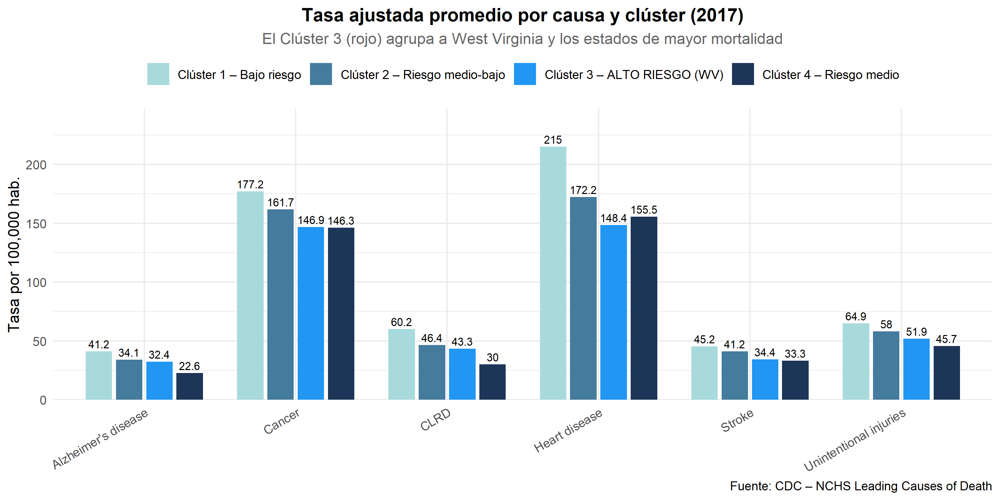
21.13.4 10.4. Visualización PCA – posicionamiento de los estados
library(ggrepel)
pca_res <- prcomp(datos_sc, scale. = FALSE)
var_exp <- round(summary(pca_res)$importance[2, 1:2] * 100, 1)
pca_df <- data.frame(
state = rownames(datos_wide),
PC1 = pca_res$x[, 1],
PC2 = pca_res$x[, 2],
cluster = as.factor(modelo_km$cluster)
)
estados_etiqueta <- c("West Virginia", "Hawaii", "Mississippi",
"Kentucky", "Alabama", "California",
"New York", "Utah", "Oklahoma")
ggplot(pca_df, aes(x = PC1, y = PC2, color = cluster)) +
geom_point(size = 3.5, alpha = 0.85) +
geom_text_repel(
data = pca_df %>% filter(state %in% estados_etiqueta),
aes(label = state),
size = 3.2,
fontface = "bold",
box.padding = 0.4,
max.overlaps = 20
) +
scale_color_manual(
values = c("1" = "#A8DADC", "2" = "#457B9D",
"3" = "#2196F3", "4" = "#1D3557"),
labels = c("1" = "Bajo riesgo",
"2" = "Medio-bajo",
"3" = "ALTO RIESGO",
"4" = "Medio")
)+
labs(
title = "Agrupamiento de estados por perfil de mortalidad (PCA + K-Means)",
subtitle = paste0("PC1 explica ", var_exp[1],
"% · PC2 explica ", var_exp[2],
"% de la varianza total"),
x = paste0("PC1 (", var_exp[1], "%)"),
y = paste0("PC2 (", var_exp[2], "%)"),
color = "Clúster",
caption = "Fuente: CDC – NCHS Leading Causes of Death"
) +
theme_minimal(base_size = 12) +
theme(
legend.position = "right",
plot.title = element_text(face = "bold", hjust = 0.5, size = 13),
plot.subtitle = element_text(hjust = 0.5, color = "gray40")
)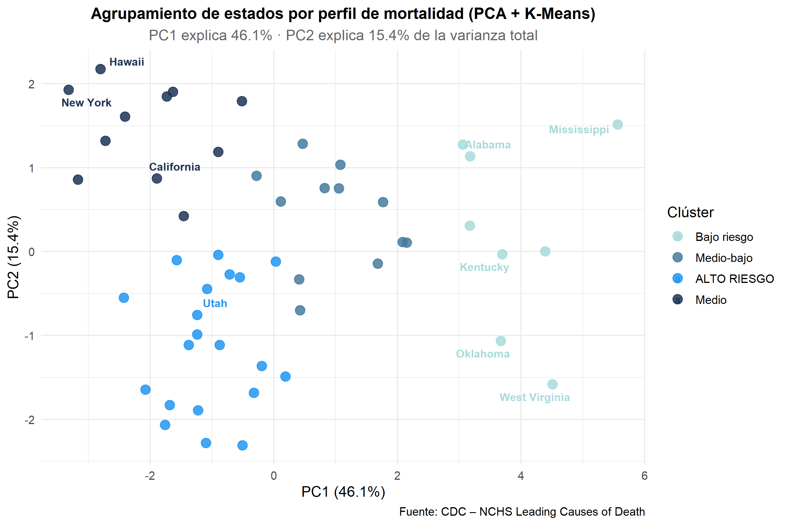
El gráfico PCA confirma la separación clara entre los cuatro clústeres.
PC1 (46.1%) es la dimensión principal de diferenciación: estados con valores altos a la derecha como West Virginia, Mississippi y Kentucky corresponden al clúster de alto riesgo, mientras que Hawaii, New York y California en el extremo izquierdo representan los de menor mortalidad.
PC2 (15.4%) segunda dimensión de variación dentro de los grupos. La separación visual entre clústeres confirma que el K-Means identificó agrupamientos reales y no aleatorios, siendo West Virginia el estado más alejado del centro, lo que refuerza su condición de caso extremo dentro del perfil de alta mortalidad.
21.14 11. Modelo Predictivo ARIMA
Con el perfil de West Virginia caracterizado en el estudio de caso y confirmada su pertenencia a un clúster, el paso siguiente es proyectar su trayectoria futura. los objetivos del modelo predictivo son:
- Proyectar la tasa ajustada total de West Virginia hacia 2018–2022, el período posterior al horizonte de los datos.
- Proyectar específicamente la tasa de Unintentional injuries, la causa de mayor crecimiento y el indicador diferenciador clave del estado, cuya aceleración desde 2014 hace especialmente relevante anticipar su comportamiento futuro (Daugherty et al. 2019).
Se implementa un modelo ARIMA (Autoregressive Integrated Moving Average), estándar metodológico en epidemiología para series de tiempo de mortalidad (Shah et al. 2019), siguiendo tres pasos: evaluación de estacionariedad, identificación del orden óptimo, ajuste y proyección con intervalos de confianza.
21.14.1 11.1. Construcción de las series de tiempo
library(forecast)
library(tseries)
library(readr)
library(janitor)
library(stringr)
datos_limpios <- read_csv(
"NCHS_Leading_Causes.csv",
col_types = cols(.default = col_character())
) %>%
clean_names() %>%
mutate(
year = as.numeric(year),
state = str_trim(state),
deaths = as.numeric(gsub("\\.", "", deaths)),
age_adjusted_death_rate = as.numeric(
gsub(",", ".", gsub("\\.", "", age_adjusted_death_rate))
)
) %>%
filter(
state != "United States",
year >= 1999,
year <= 2017
)
# --- Serie 1: Tasa ajustada total – West Virginia ---
serie_wv_total <- datos_limpios %>%
filter(state == "West Virginia",
cause_name == "All causes",
!is.na(age_adjusted_death_rate)) %>%
arrange(year) %>%
pull(age_adjusted_death_rate)
ts_wv_total <- ts(serie_wv_total, start = 1999, frequency = 1)
# --- Serie 2: Tasa de Unintentional injuries – West Virginia ---
serie_wv_acc <- datos_limpios %>%
filter(state == "West Virginia",
cause_name == "Unintentional injuries",
!is.na(age_adjusted_death_rate)) %>%
arrange(year) %>%
pull(age_adjusted_death_rate)
ts_wv_acc <- ts(serie_wv_acc, start = 1999, frequency = 1)
cat("Serie All causes WV (1999–2017):\n"); print(round(serie_wv_total, 1))## Serie All causes WV (1999–2017):## [1] 1012.3 1011.1 1000.9 999.0 1003.1 973.0 965.1 947.5 954.2 964.3 947.7 933.6 953.2 939.3 923.8 929.1
## [17] 943.4 943.3 957.1##
## Serie Unintentional Injuries WV:## [1] 42.0 43.2 44.7 50.9 53.7 59.0 49.6 62.4 65.8 65.5 48.2 63.7 74.8 70.8 71.7 71.0 77.9 89.7 100.321.14.2 11.2. Prueba de estacionariedad – Dickey-Fuller Aumentada (ADF)
La hipótesis nula de la prueba ADF establece que la serie tiene raíz
unitaria (no estacionaria). Un valor-p < 0.05 permite rechazarla. Si la
serie resulta no estacionaria, auto.arima() aplica diferenciación
automáticamente (d ≥ 1).
library(kableExtra)
adf_total <- adf.test(ts_wv_total, alternative = "stationary")
adf_acc <- adf.test(ts_wv_acc, alternative = "stationary")
data.frame(
Serie = c("WV – All causes",
"WV – Unintentional injuries"),
`Estadístico ADF` = c(round(adf_total$statistic, 4),
round(adf_acc$statistic, 4)),
`Valor-p` = c(round(adf_total$p.value, 4),
round(adf_acc$p.value, 4)),
Resultado = c(
ifelse(adf_total$p.value < 0.05, "✔ Estacionaria", "✖ No estacionaria"),
ifelse(adf_acc$p.value < 0.05, "✔ Estacionaria", "✖ No estacionaria")
),
check.names = FALSE
) %>%
kable(
caption = "Prueba Dickey-Fuller Aumentada – Series de West Virginia",
align = c("l", "c", "c", "c")
) %>%
kable_styling(bootstrap_options = c("striped", "hover"),
full_width = FALSE, font_size = 12) %>%
row_spec(0, background = "#1D3557", color = "white", bold = TRUE)| Serie | Estadístico ADF | Valor-p | Resultado |
|---|---|---|---|
| WV – All causes | 0.0591 | 0.9900 | ✖ No estacionaria |
| WV – Unintentional injuries | -2.1609 | 0.5111 | ✖ No estacionaria |
21.14.3 11.3. ACF y PACF – identificación visual del orden
par(mfrow = c(2, 2), mar = c(4, 4, 3, 1), bg = "#FAFAFA")
acf(ts_wv_total, main = "ACF – WV All causes",
col = "#1D3557", lwd = 2)
pacf(ts_wv_total, main = "PACF – WV All causes",
col = "#1D3557", lwd = 2)
acf(ts_wv_acc, main = "ACF – WV Unintentional Injuries",
col = "#E63946", lwd = 2)
pacf(ts_wv_acc, main = "PACF – WV Unintentional Injuries",
col = "#E63946", lwd = 2)
Las funciones ACF y PACF permiten identificar la estructura de dependencia temporal: un corte abrupto en el PACF tras el lag 1 sugiere un componente ARIMA(1); un corte similar en el ACF, un MA(1). Estos patrones orientan la selección automática del modelo.
21.14.4 11.4. Selección automática del modelo
modelo_total <- auto.arima(ts_wv_total,
stepwise = FALSE,
approximation = FALSE,
trace = FALSE)
modelo_acc <- auto.arima(ts_wv_acc,
stepwise = FALSE,
approximation = FALSE,
trace = FALSE)
data.frame(
Serie = c("WV – All causes",
"WV – Unintentional injuries"),
Modelo = c(as.character(modelo_total),
as.character(modelo_acc)),
AIC = c(round(AIC(modelo_total), 2),
round(AIC(modelo_acc), 2)),
`Sigma²` = c(round(modelo_total$sigma2, 4),
round(modelo_acc$sigma2, 4)),
check.names = FALSE
) %>%
kable(caption = "Modelos ARIMA seleccionados por criterio AIC mínimo",
align = c("l", "c", "c", "c")) %>%
kable_styling(bootstrap_options = c("striped", "hover"),
full_width = FALSE, font_size = 12) %>%
row_spec(0, background = "#1D3557", color = "white", bold = TRUE)| Serie | Modelo | AIC | Sigma² |
|---|---|---|---|
| WV – All causes | ARIMA(0,1,0) | 146.70 | 181.5014 |
| WV – Unintentional injuries | ARIMA(0,1,0) with drift | 129.63 | 66.6085 |
##
## --- Resumen modelo All causes ---## Series: ts_wv_total
## ARIMA(0,1,0)
##
## sigma^2 = 181.5: log likelihood = -72.35
## AIC=146.7 AICc=146.95 BIC=147.59
##
## Training set error measures:
## ME RMSE MAE MPE MAPE MASE ACF1
## Training set -2.851984 13.11292 10.73749 -0.2992174 1.124755 0.9520927 -0.08201026##
## --- Resumen modelo Unintentional injuries ---## Series: ts_wv_acc
## ARIMA(0,1,0) with drift
##
## Coefficients:
## drift
## 3.2389
## s.e. 1.8695
##
## sigma^2 = 66.61: log likelihood = -62.82
## AIC=129.63 AICc=130.43 BIC=131.41
##
## Training set error measures:
## ME RMSE MAE MPE MAPE MASE ACF1
## Training set 0.002040057 7.719914 5.733619 -1.349817 9.382562 0.8480291 -0.161940821.14.5 11.5. Diagnóstico de residuos
par(mfrow = c(1, 2), bg = "#FAFAFA")
checkresiduals(modelo_total, plot = TRUE, main = "Residuos – WV All causes")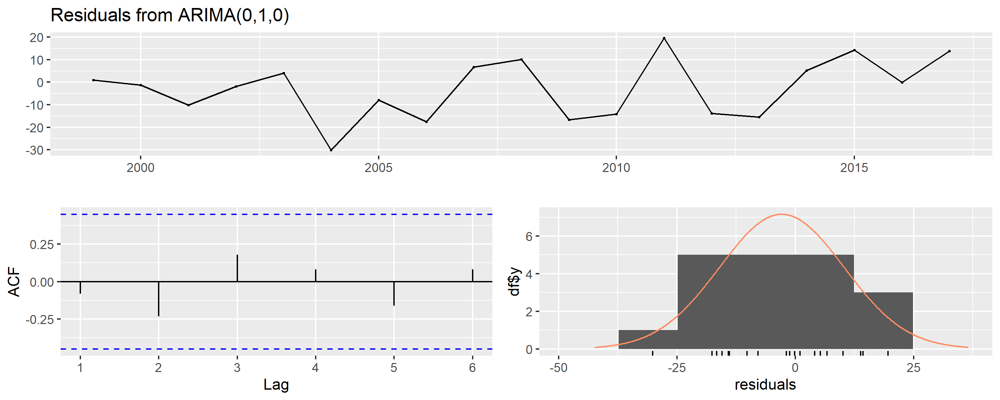
##
## Ljung-Box test
##
## data: Residuals from ARIMA(0,1,0)
## Q* = 2.3798, df = 4, p-value = 0.6663
##
## Model df: 0. Total lags used: 4
##
## Ljung-Box test
##
## data: Residuals from ARIMA(0,1,0) with drift
## Q* = 6.3866, df = 4, p-value = 0.1721
##
## Model df: 0. Total lags used: 4Los residuos de ambos modelos se comportan como ruido blanco: oscilan alrededor de cero sin patrones, la ACF no muestra autocorrelación significativa y el histograma se aproxima a una distribución normal. La prueba de Ljung-Box confirma esto con un p-value de 0.6663, muy por encima de 0.05.
21.14.6 11.6. Proyecciones ARIMA – West Virginia (2018–2022)
library(patchwork)
horizonte <- 5
pred_total <- forecast(modelo_total, h = horizonte, level = c(80, 95))
pred_acc <- forecast(modelo_acc, h = horizonte, level = c(80, 95))
# Función para construir data frames de pronóstico
build_fc <- function(serie_orig, pred_obj, inicio) {
anios_hist <- seq(inicio, inicio + length(serie_orig) - 1)
anios_fut <- seq(inicio + length(serie_orig),
inicio + length(serie_orig) + horizonte - 1)
list(
hist = data.frame(year = anios_hist,
valor = as.numeric(serie_orig)),
fut = data.frame(year = anios_fut,
valor = as.numeric(pred_obj$mean),
lo80 = as.numeric(pred_obj$lower[, 1]),
hi80 = as.numeric(pred_obj$upper[, 1]),
lo95 = as.numeric(pred_obj$lower[, 2]),
hi95 = as.numeric(pred_obj$upper[, 2]))
)
}
d_tot <- build_fc(serie_wv_total, pred_total, 1999)
d_acc <- build_fc(serie_wv_acc, pred_acc, 1999)
# ── Gráfico 1 – Tasa total ────────────────────────────────────────────────
p1 <- ggplot() +
geom_ribbon(data = d_tot$fut,
aes(x = year, ymin = lo95, ymax = hi95),
fill = "#A8DADC", alpha = 0.35) +
geom_ribbon(data = d_tot$fut,
aes(x = year, ymin = lo80, ymax = hi80),
fill = "#457B9D", alpha = 0.40) +
geom_line(data = d_tot$hist,
aes(x = year, y = valor),
color = "#1D3557", linewidth = 1.3) +
geom_point(data = d_tot$hist,
aes(x = year, y = valor),
color = "#1D3557", size = 2) +
geom_line(data = d_tot$fut,
aes(x = year, y = valor),
color = "#457B9D", linewidth = 1.3, linetype = "dashed") +
geom_point(data = d_tot$fut,
aes(x = year, y = valor),
color = "#457B9D", size = 3, shape = 17) +
geom_vline(xintercept = 2017.5, linetype = "dotted",
color = "gray50", linewidth = 0.8) +
annotate("text", x = 2017.7,
y = max(d_tot$hist$valor) * 0.99,
label = "→ Proyección", hjust = 0,
color = "gray40", fontface = "italic", size = 3.5) +
scale_x_continuous(breaks = seq(1999, 2022, by = 2)) +
scale_y_continuous(labels = comma) +
labs(title = "Proyección ARIMA – Tasa ajustada total (All causes)",
subtitle = "West Virginia · Horizonte 2018–2022",
x = "Año", y = "Tasa por 100,000 hab.",
caption = "Bandas: IC 80% (oscuro) e IC 95% (claro)") +
theme_minimal(base_size = 12) +
theme(plot.title = element_text(face = "bold", hjust = 0.5),
plot.subtitle = element_text(hjust = 0.5, color = "gray40"),
axis.text.x = element_text(angle = 45, hjust = 1),
panel.grid.minor = element_blank())
# ── Gráfico 2 – Unintentional injuries ───────────────────────────────────
p2 <- ggplot() +
geom_ribbon(data = d_acc$fut,
aes(x = year, ymin = lo95, ymax = hi95),
fill = "#FFCDD2", alpha = 0.40) +
geom_ribbon(data = d_acc$fut,
aes(x = year, ymin = lo80, ymax = hi80),
fill = "#E63946", alpha = 0.35) +
geom_line(data = d_acc$hist,
aes(x = year, y = valor),
color = "#B71C1C", linewidth = 1.3) +
geom_point(data = d_acc$hist,
aes(x = year, y = valor),
color = "#B71C1C", size = 2) +
geom_line(data = d_acc$fut,
aes(x = year, y = valor),
color = "#E63946", linewidth = 1.3, linetype = "dashed") +
geom_point(data = d_acc$fut,
aes(x = year, y = valor),
color = "#E63946", size = 3, shape = 17) +
geom_vline(xintercept = 2017.5, linetype = "dotted",
color = "gray50", linewidth = 0.8) +
annotate("text", x = 2014,
y = min(d_acc$hist$valor) * 1.04,
label = "Aceleración\ndesde 2014",
color = "#B71C1C", fontface = "bold", size = 3.3) +
annotate("segment", x = 2014, xend = 2014,
y = min(d_acc$hist$valor) * 1.10,
yend = d_acc$hist$valor[d_acc$hist$year == 2014] * 0.98,
arrow = arrow(length = unit(0.2, "cm")), color = "#B71C1C") +
scale_x_continuous(breaks = seq(1999, 2022, by = 2)) +
scale_y_continuous(labels = comma) +
labs(title = "Proyección ARIMA – Unintentional Injuries",
subtitle = "West Virginia · La causa de mayor crecimiento y mayor riesgo proyectado",
x = "Año", y = "Tasa por 100,000 hab.",
caption = "Bandas: IC 80% (oscuro) e IC 95% (claro)") +
theme_minimal(base_size = 12) +
theme(plot.title = element_text(face = "bold", hjust = 0.5),
plot.subtitle = element_text(hjust = 0.5, color = "gray40"),
axis.text.x = element_text(angle = 45, hjust = 1),
panel.grid.minor = element_blank())
p1 / p2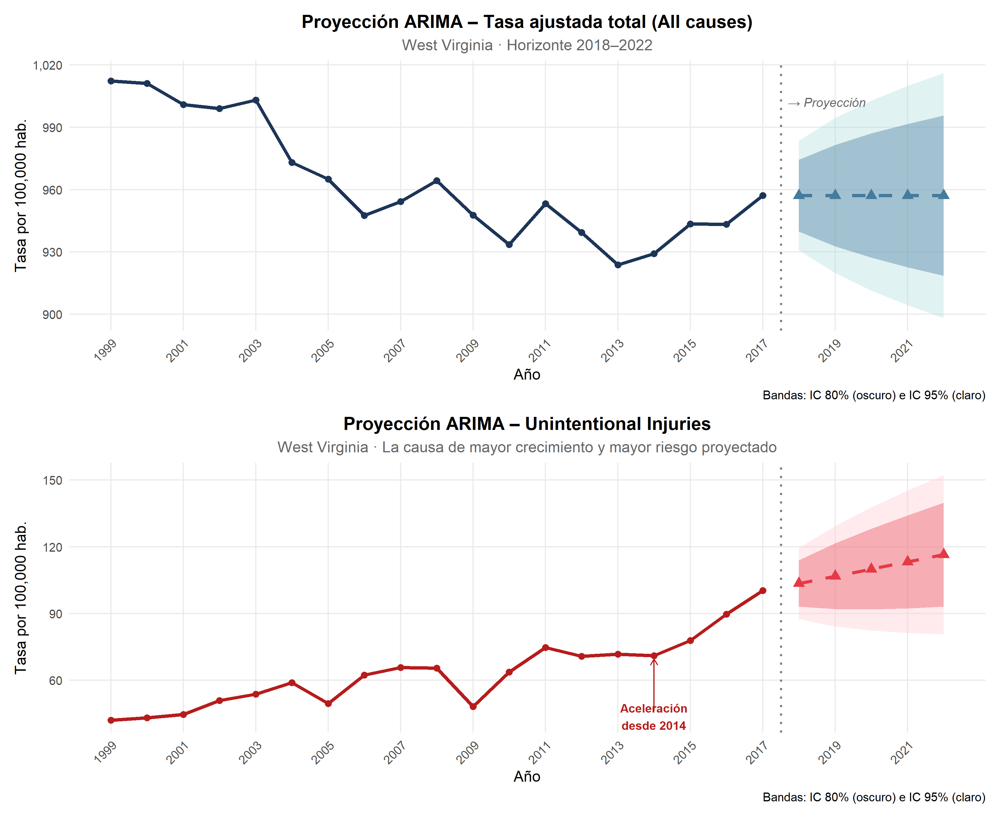
Las proyecciones muestran trayectorias divergentes. All causes se mantiene estable alrededor de 957 por 100,000 habitantes, reflejando que West Virginia mejora pero sin cerrar la brecha con la media nacional. Unintentional injuries continúa su crecimiento acelerado, proyectando superar 120 por 100,000 hacia 2022, consecuencia directa de la epidemia de opioides no resuelta. Ambos modelos deben interpretarse como indicadores de dirección de tendencia, con mayor confiabilidad en el corto plazo.
21.14.7 11.7. Tabla de valores proyectados
data.frame(
`Año` = 2018:2022,
`WV total (pred.)` = round(as.numeric(pred_total$mean), 1),
`IC 95% inf. (total)` = round(as.numeric(pred_total$lower[, 2]), 1),
`IC 95% sup. (total)` = round(as.numeric(pred_total$upper[, 2]), 1),
`Unint. Inj. (pred.)` = round(as.numeric(pred_acc$mean), 1),
`IC 95% inf. (Unint.)` = round(as.numeric(pred_acc$lower[, 2]), 1),
`IC 95% sup. (Unint.)` = round(as.numeric(pred_acc$upper[, 2]), 1),
check.names = FALSE
) %>%
kable(
caption = "Valores proyectados por ARIMA – West Virginia (2018–2022)",
align = rep("c", 7)
) %>%
kable_styling(bootstrap_options = c("striped", "hover"),
full_width = TRUE, font_size = 11) %>%
row_spec(0, background = "#1D3557", color = "white", bold = TRUE) %>%
add_header_above(
c(" " = 1,
"Tasa ajustada – All causes" = 3,
"Tasa ajustada – Unintentional injuries" = 3),
background = "#457B9D", color = "white", bold = TRUE
)| Año | WV total (pred.) | IC 95% inf. (total) | IC 95% sup. (total) | Unint. Inj. (pred.) | IC 95% inf. (Unint.) | IC 95% sup. (Unint.) |
|---|---|---|---|---|---|---|
| 2018 | 957.1 | 930.7 | 983.5 | 103.5 | 87.5 | 119.5 |
| 2019 | 957.1 | 919.8 | 994.4 | 106.8 | 84.2 | 129.4 |
| 2020 | 957.1 | 911.4 | 1002.8 | 110.0 | 82.3 | 137.7 |
| 2021 | 957.1 | 904.3 | 1009.9 | 113.3 | 81.3 | 145.2 |
| 2022 | 957.1 | 898.1 | 1016.1 | 116.5 | 80.7 | 152.3 |
21.14.8 11.8. Modelo predictivo
El modelo ARIMA proyecta una continuación de la tendencia observada entre 1999 y 2017, aunque a un ritmo moderado y con intervalos de confianza amplios, resultado esperado dado el tamaño reducido de la serie (19 observaciones anuales). Este resultado es coherente con el hallazgo de la sección 9.3: West Virginia mejora gradualmente, pero sin converger con la media nacional, lo que sugiere que la reducción proyectada no alcanzará para cerrar la brecha estructural en el horizonte analizado.
Unintentional injuries: Esta es la proyección con mayores implicaciones de política pública. El modelo captura la aceleración estructural iniciada en 2014 vinculada a la epidemia de sobredosis de opioides documentada en la sección 9.1.1 y la proyecta hacia 2018–2022. Si las condiciones estructurales persisten, la tasa de lesiones no intencionales en West Virginia continuará creciendo, consolidando la brecha ya identificada respecto al promedio nacional y al resto de los estados del Clúster 3. ## 12. Comparación de Modelos Predictivos
21.15 12. Comparación de Modelos Predictivos
El modelo ARIMA(0,1,0) with drift fue implementado en la sección anterior como estándar metodológico en epidemiología de series de mortalidad. Sin embargo, la selección de un modelo predictivo requiere validación empírica frente a alternativas. En esta sección implementamos dos modelos adicionales ETS (Suavizamiento Exponencial de Holt) y Regresión lineal con tendencia temporal, realizando una comparación sistemática que justifica la elección final mediante los criterios de información, validación de series de tiempo y diagnóstico de residuos.
El foco es la serie de Unintentional injuries – West Virginia, por ser la causa de mayor crecimiento en el ultimo año y la de mayor relevancia para política pública, dentro de el eje central del caso de estudio.
21.15.1 12.1. Modelo 2 – ETS (Error, Trend, Seasonality)
21.15.1.1 Marco teórico
El modelo ETl, generaliza la familia de métodos de suavizamiento exponencial dentro de un marco probabilístico formal. A diferencia de los métodos clásicos, ETS especifica explícitamente una función de verosimilitud, lo que permite la selección automática del tipo de error (Aditivo/Multiplicativo), tendencia (None/Additive/Additive damped) y estacionalidad (None/Additive/Multiplicative) mediante criterio AICc. Esta propiedad lo convierte en un competidor directo de ARIMA para series univariadas de corto alcance (Hyndman & Khandakar, 2008).
En series integradas I(1) con tendencia positiva sostenida como es el
caso de Unintentional injuries ets() típicamente selecciona una
especificación ETS(A,A,N) o ETS(M,A,N): error aditivo o multiplicativo,
tendencia aditiva, sin componente estacional dado que la serie es anual.
library(forecast)
library(tseries)
library(kableExtra)
library(ggplot2)
library(scales)
# Ajuste automático – selección por AICc
modelo_ets <- ets(ts_wv_acc)
# Resumen del modelo seleccionado
cat("=== Modelo ETS seleccionado ===\n")## === Modelo ETS seleccionado ===## Especificación: ETS(M,A,N)## AIC: 133.22## AICc: 137.84## BIC: 137.95## === Parámetros de suavizamiento ===## alpha beta l b
## 0.0001 0.0001 38.6801 2.4719##
## === Métricas de ajuste en muestra ===## ME RMSE MAE MPE MAPE MASE ACF1
## Training set 0.0158 6.5703 4.9747 -0.9952 7.837 0.7358 0.17221.15.1.2 Diagnóstico de residuos – ETS
par(mfrow = c(1, 2), bg = "#FAFAFA")
checkresiduals(modelo_ets,
plot = TRUE,
main = "Residuos – ETS (Unintentional Injuries WV)")
##
## Ljung-Box test
##
## data: Residuals from ETS(M,A,N)
## Q* = 5.6615, df = 4, p-value = 0.2259
##
## Model df: 0. Total lags used: 4Los residuos del modelo ETS deben comportarse como ruido blanco para que el modelo sea válido. Un p-value > 0.05 en la prueba de Ljung-Box confirma independencia serial.
21.15.1.3 Proyección ETS – 2018–2022
horizonte <- 5
pred_ets <- forecast(modelo_ets, h = horizonte, level = c(80, 95))
anios_hist <- 1999:2017
anios_fut <- 2018:2022
df_hist_ets <- data.frame(year = anios_hist, valor = serie_wv_acc)
df_fut_ets <- data.frame(
year = anios_fut,
valor = as.numeric(pred_ets$mean),
lo80 = as.numeric(pred_ets$lower[, 1]),
hi80 = as.numeric(pred_ets$upper[, 1]),
lo95 = as.numeric(pred_ets$lower[, 2]),
hi95 = as.numeric(pred_ets$upper[, 2])
)
ggplot() +
geom_ribbon(data = df_fut_ets,
aes(x = year, ymin = lo95, ymax = hi95),
fill = "#FFCDD2", alpha = 0.40) +
geom_ribbon(data = df_fut_ets,
aes(x = year, ymin = lo80, ymax = hi80),
fill = "#E63946", alpha = 0.30) +
geom_line(data = df_hist_ets,
aes(x = year, y = valor),
color = "#B71C1C", linewidth = 1.3) +
geom_point(data = df_hist_ets,
aes(x = year, y = valor),
color = "#B71C1C", size = 2) +
geom_line(data = df_fut_ets,
aes(x = year, y = valor),
color = "#E63946", linewidth = 1.3, linetype = "dashed") +
geom_point(data = df_fut_ets,
aes(x = year, y = valor),
color = "#E63946", size = 3, shape = 17) +
geom_vline(xintercept = 2017.5, linetype = "dotted",
color = "gray50", linewidth = 0.8) +
annotate("text", x = 2017.7, y = max(serie_wv_acc) * 0.97,
label = "→ Proyección", hjust = 0,
color = "gray40", fontface = "italic", size = 3.5) +
scale_x_continuous(breaks = seq(1999, 2022, by = 2)) +
scale_y_continuous(labels = comma) +
labs(
title = "Proyección ETS – Unintentional Injuries",
subtitle = "West Virginia · Horizonte 2018–2022",
x = "Año", y = "Tasa por 100,000 hab.",
caption = "Bandas: IC 80% (oscuro) e IC 95% (claro)"
) +
theme_minimal(base_size = 12) +
theme(
plot.title = element_text(face = "bold", hjust = 0.5),
plot.subtitle = element_text(hjust = 0.5, color = "gray40"),
axis.text.x = element_text(angle = 45, hjust = 1),
panel.grid.minor = element_blank()
)
data.frame(
`Año` = 2018:2022,
`Predicción` = round(as.numeric(pred_ets$mean), 1),
`IC 80% inf.` = round(as.numeric(pred_ets$lower[, 1]), 1),
`IC 80% sup.` = round(as.numeric(pred_ets$upper[, 1]), 1),
`IC 95% inf.` = round(as.numeric(pred_ets$lower[, 2]), 1),
`IC 95% sup.` = round(as.numeric(pred_ets$upper[, 2]), 1),
check.names = FALSE
) %>%
kable(
caption = "Valores proyectados – ETS · Unintentional injuries WV (2018–2022)",
align = rep("c", 6)
) %>%
kable_styling(bootstrap_options = c("striped", "hover"),
full_width = TRUE, font_size = 11) %>%
row_spec(0, background = "#B71C1C", color = "white", bold = TRUE)| Año | Predicción | IC 80% inf. | IC 80% sup. | IC 95% inf. | IC 95% sup. |
|---|---|---|---|---|---|
| 2018 | 88.1 | 76.1 | 100.2 | 69.7 | 106.6 |
| 2019 | 90.6 | 78.2 | 103.0 | 71.6 | 109.5 |
| 2020 | 93.1 | 80.3 | 105.8 | 73.6 | 112.5 |
| 2021 | 95.5 | 82.5 | 108.6 | 75.5 | 115.5 |
| 2022 | 98.0 | 84.6 | 111.4 | 77.5 | 118.5 |
21.15.2 12.2. Modelo 3 – Regresión Lineal con Tendencia Temporal
La regresión lineal con tendencia temporal (OLS-Trend) es el modelo de referencia más simple para series con tendencia monotónica. Asume que la tasa de mortalidad es una función lineal del tiempo:
\[\hat{y}_t = \beta_0 + \beta_1 \cdot t + \varepsilon_t\]
donde \(t = 1, 2, ..., 19\) indexa los años 1999–2017. Su inclusión en la comparación cumple una función metodológica específica: constituye el benchmark mínimo.
# Variable de tiempo explícita (requerida para predict() limpio)
tiempo_hist <- seq_along(serie_wv_acc) # 1:19
modelo_lm <- lm(serie_wv_acc ~ tiempo_hist)
cat("=== Modelo Regresión Lineal ===\n")## === Modelo Regresión Lineal ===##
## Call:
## lm(formula = serie_wv_acc ~ tiempo_hist)
##
## Residuals:
## Min 1Q Median 3Q Max
## -17.755 -3.853 1.440 3.914 14.029
##
## Coefficients:
## Estimate Std. Error t value Pr(>|t|)
## (Intercept) 38.0211 3.3110 11.483 1.97e-09 ***
## tiempo_hist 2.5395 0.2904 8.745 1.06e-07 ***
## ---
## Signif. codes: 0 '***' 0.001 '**' 0.01 '*' 0.05 '.' 0.1 ' ' 1
##
## Residual standard error: 6.933 on 17 degrees of freedom
## Multiple R-squared: 0.8181, Adjusted R-squared: 0.8074
## F-statistic: 76.47 on 1 and 17 DF, p-value: 1.064e-07##
## === Métricas de ajuste en muestra ===resid_lm <- residuals(modelo_lm)
rmse_lm <- sqrt(mean(resid_lm^2))
mae_lm <- mean(abs(resid_lm))
mape_lm <- mean(abs(resid_lm / serie_wv_acc)) * 100
cat("RMSE:", round(rmse_lm, 4), "\n")## RMSE: 6.5581## MAE: 5.0335## MAPE: 7.9567 %21.15.2.1 Diagnóstico de residuos – Regresión Lineal
El diagnóstico de residuos en regresión aplicada a series de tiempo incluye obligatoriamente la prueba de Ljung-Box, que evalúa si los residuos presentan autocorrelación serial la violación crítica del supuesto OLS en este contexto.
# Convertir residuos a objeto ts para checkresiduals
resid_lm_ts <- ts(resid_lm, start = 1999, frequency = 1)
par(mfrow = c(1, 2), bg = "#FAFAFA")
# ACF de residuos
acf(resid_lm_ts,
main = "ACF – Residuos Regresión Lineal",
col = "#6A4C93", lwd = 2)
# Histograma
hist(resid_lm, breaks = 8,
main = "Distribución – Residuos Regresión Lineal",
xlab = "Residuos", col = "#D8B4FE", border = "white")
curve(dnorm(x, mean = mean(resid_lm), sd = sd(resid_lm)),
add = TRUE, col = "#6A4C93", lwd = 2)
par(mfrow = c(1, 1))
# Prueba de Ljung-Box sobre residuos de la regresión
lb_lm <- Box.test(resid_lm_ts, lag = 4, type = "Ljung-Box")
cat("\n=== Ljung-Box – Residuos Regresión Lineal ===\n")##
## === Ljung-Box – Residuos Regresión Lineal ===cat("Q* =", round(lb_lm$statistic, 4),
"| df =", lb_lm$parameter,
"| p-value =", round(lb_lm$p.value, 4), "\n")## Q* = 4.7703 | df = 4 | p-value = 0.3117cat(ifelse(lb_lm$p.value < 0.05,
"⚠ Autocorrelación significativa en residuos → supuesto OLS violado",
"✔ No se detecta autocorrelación significativa"), "\n")## ✔ No se detecta autocorrelación significativa21.15.2.2 Proyección – Regresión Lineal (2018–2022)
tiempo_proj <- data.frame(
tiempo_hist = (length(serie_wv_acc) + 1):(length(serie_wv_acc) + horizonte)
)
pred_lm_ic <- predict(modelo_lm, newdata = tiempo_proj,
interval = "prediction", level = 0.95)
pred_lm_ic80 <- predict(modelo_lm, newdata = tiempo_proj,
interval = "prediction", level = 0.80)
df_fut_lm <- data.frame(
year = anios_fut,
valor = pred_lm_ic[, "fit"],
lo95 = pred_lm_ic[, "lwr"],
hi95 = pred_lm_ic[, "upr"],
lo80 = pred_lm_ic80[, "lwr"],
hi80 = pred_lm_ic80[, "upr"]
)
ggplot() +
geom_ribbon(data = df_fut_lm,
aes(x = year, ymin = lo95, ymax = hi95),
fill = "#E9D5FF", alpha = 0.45) +
geom_ribbon(data = df_fut_lm,
aes(x = year, ymin = lo80, ymax = hi80),
fill = "#6A4C93", alpha = 0.30) +
geom_line(data = df_hist_ets,
aes(x = year, y = valor),
color = "#3B0764", linewidth = 1.3) +
geom_point(data = df_hist_ets,
aes(x = year, y = valor),
color = "#3B0764", size = 2) +
geom_line(data = df_fut_lm,
aes(x = year, y = valor),
color = "#6A4C93", linewidth = 1.3, linetype = "dashed") +
geom_point(data = df_fut_lm,
aes(x = year, y = valor),
color = "#6A4C93", size = 3, shape = 17) +
geom_vline(xintercept = 2017.5, linetype = "dotted",
color = "gray50", linewidth = 0.8) +
annotate("text", x = 2017.7, y = max(serie_wv_acc) * 0.97,
label = "→ Proyección", hjust = 0,
color = "gray40", fontface = "italic", size = 3.5) +
scale_x_continuous(breaks = seq(1999, 2022, by = 2)) +
scale_y_continuous(labels = comma) +
labs(
title = "Proyección Regresión Lineal – Unintentional Injuries",
subtitle = "West Virginia · Horizonte 2018–2022",
x = "Año", y = "Tasa por 100,000 hab.",
caption = "Bandas: IC 80% (oscuro) e IC 95% (claro). Intervalos de predicción OLS."
) +
theme_minimal(base_size = 12) +
theme(
plot.title = element_text(face = "bold", hjust = 0.5),
plot.subtitle = element_text(hjust = 0.5, color = "gray40"),
axis.text.x = element_text(angle = 45, hjust = 1),
panel.grid.minor = element_blank()
)
data.frame(
`Año` = 2018:2022,
`Predicción` = round(pred_lm_ic[, "fit"], 1),
`IC 80% inf.` = round(pred_lm_ic80[, "lwr"], 1),
`IC 80% sup.` = round(pred_lm_ic80[, "upr"], 1),
`IC 95% inf.` = round(pred_lm_ic[, "lwr"], 1),
`IC 95% sup.` = round(pred_lm_ic[, "upr"], 1),
check.names = FALSE
) %>%
kable(
caption = "Valores proyectados – Regresión Lineal · Unintentional injuries WV (2018–2022)",
align = rep("c", 6)
) %>%
kable_styling(bootstrap_options = c("striped", "hover"),
full_width = TRUE, font_size = 11) %>%
row_spec(0, background = "#6A4C93", color = "white", bold = TRUE)| Año | Predicción | IC 80% inf. | IC 80% sup. | IC 95% inf. | IC 95% sup. |
|---|---|---|---|---|---|
| 2018 | 88.8 | 78.6 | 99.1 | 72.6 | 105.0 |
| 2019 | 91.3 | 81.0 | 101.7 | 74.9 | 107.8 |
| 2020 | 93.9 | 83.3 | 104.5 | 77.2 | 110.6 |
| 2021 | 96.4 | 85.7 | 107.2 | 79.4 | 113.4 |
| 2022 | 99.0 | 88.0 | 109.9 | 81.7 | 116.3 |
21.15.3 12.3. Comparación sistemática de modelos
21.15.3.1 12.3.1. Criterios de información (modelos paramétricos)
Los criterios AIC, AICc y BIC penalizan la verosimilitud por la complejidad del modelo. El AICc es la métrica preferida cuando n < 40, ya que incorpora una corrección explícita por tamaño muestral que evita la sobreestimación de modelos complejos.
# Ajustar versiones ETS equivalentes a Holt para comparación extendida
modelo_holt_fit <- ets(ts_wv_acc, model = "AAN")
modelo_holtd_fit <- ets(ts_wv_acc, model = "AAN", damped = TRUE)
tabla_aic <- data.frame(
Modelo = c(
"ARIMA(0,1,0) with drift",
paste0("ETS – ", modelo_ets$method),
"Holt lineal – ETS(A,A,N)",
"Holt amortiguado – ETS(A,Ad,N)"
),
Parámetros = c(1, length(modelo_ets$par),
length(modelo_holt_fit$par),
length(modelo_holtd_fit$par)),
AIC = round(c(AIC(modelo_acc),
AIC(modelo_ets),
AIC(modelo_holt_fit),
AIC(modelo_holtd_fit)), 2),
AICc = round(c(modelo_acc$aicc,
modelo_ets$aicc,
modelo_holt_fit$aicc,
modelo_holtd_fit$aicc), 2),
BIC = round(c(BIC(modelo_acc),
BIC(modelo_ets),
BIC(modelo_holt_fit),
BIC(modelo_holtd_fit)), 2),
check.names = FALSE
)
mejor_aicc <- which.min(tabla_aic$AICc)
tabla_aic %>%
kable(
caption = "Criterios de información – modelos paramétricos (n = 19)",
align = c("l", "c", "c", "c", "c")
) %>%
kable_styling(bootstrap_options = c("striped", "hover"),
full_width = FALSE, font_size = 12) %>%
row_spec(0, background = "#1D3557", color = "white", bold = TRUE) %>%
row_spec(mejor_aicc, background = "#A8DADC", bold = TRUE) %>%
add_header_above(
c(" " = 2, "Criterios de información (menor = mejor)" = 3),
background = "#457B9D", color = "white", bold = TRUE
)| Modelo | Parámetros | AIC | AICc | BIC |
|---|---|---|---|---|
| ARIMA(0,1,0) with drift | 1 | 129.63 | 130.43 | 131.41 |
| ETS – ETS(M,A,N) | 4 | 133.22 | 137.84 | 137.95 |
| Holt lineal – ETS(A,A,N) | 4 | 137.47 | 142.08 | 142.19 |
| Holt amortiguado – ETS(A,Ad,N) | 5 | 141.39 | 148.39 | 147.06 |
La tabla de criterios de información confirma que ARIMA(0,1,0) with drift es el modelo óptimo para la serie de Unintentional injuries en West Virginia. Con un único parámetro estimado el drift β = 3.24 , obtiene los valores más bajos en AIC (129.63), AICc (130.43) y BIC (131.41), los tres criterios evaluados de forma simultánea.
Este resultado no es trivial: significa que el modelo más simple es también el que mejor balancea ajuste, lo cual es la condición ideal en series cortas.
La diferencia de AICc frente al segundo mejor modelo, ETS(M,A,N), es de 7.41 puntos. Siguiendo la escala de Burnham & Anderson (2002), diferencias superiores a 7 puntos constituyen evidencia fuerte contra el modelo con mayor AICc, descartando ETS como alternativa competitiva a pesar de utilizar cuatro parámetros.
Holt lineal y Holt amortiguado acumulan diferencias de 11.65 y 17.96 puntos respectivamente, lo que los sitúa fuera de cualquier consideración de selección. El BIC, que penaliza la complejidad de forma más severa que el AIC, refuerza la misma conclusión: ARIMA es el único modelo el ajuste converge.
21.15.3.2 12.3.2. Diagnóstico comparativo de residuos
La prueba de Ljung-Box evalúa si los residuos de cada modelo son estadísticamente independientes. Un p-value > 0.05 es condición necesaria para que el modelo sea válido: residuos con autocorrelación indican que el modelo no capturó toda la estructura temporal disponible.
# Ljung-Box con lag = 4 (estándar para n = 19, series anuales)
lb_arima <- Box.test(residuals(modelo_acc), lag = 4, type = "Ljung-Box")
lb_ets <- Box.test(residuals(modelo_ets), lag = 4, type = "Ljung-Box")
lb_holt <- Box.test(residuals(modelo_holt_fit), lag = 4, type = "Ljung-Box")
lb_holtd <- Box.test(residuals(modelo_holtd_fit), lag = 4, type = "Ljung-Box")
lb_lm <- Box.test(ts(residuals(modelo_lm), start = 1999, frequency = 1),
lag = 4, type = "Ljung-Box")
tabla_lb <- data.frame(
Modelo = c(
"ARIMA(0,1,0) with drift",
paste0("ETS – ", modelo_ets$method),
"Holt lineal",
"Holt amortiguado",
"Regresión lineal"
),
`Q*` = round(c(lb_arima$statistic, lb_ets$statistic,
lb_holt$statistic, lb_holtd$statistic,
lb_lm$statistic), 4),
`df` = c(lb_arima$parameter, lb_ets$parameter,
lb_holt$parameter, lb_holtd$parameter,
lb_lm$parameter),
`p-value` = round(c(lb_arima$p.value, lb_ets$p.value,
lb_holt$p.value, lb_holtd$p.value,
lb_lm$p.value), 4),
Resultado = ifelse(
c(lb_arima$p.value, lb_ets$p.value,
lb_holt$p.value, lb_holtd$p.value,
lb_lm$p.value) > 0.05,
"✔ Ruido blanco",
"✖ Autocorrelación"
),
check.names = FALSE
)
filas_ok <- which(tabla_lb$`p-value` > 0.05)
tabla_lb %>%
kable(
caption = "Prueba de Ljung-Box sobre residuos – todos los modelos (lag = 4)",
align = c("l", "c", "c", "c", "c")
) %>%
kable_styling(bootstrap_options = c("striped", "hover"),
full_width = FALSE, font_size = 12) %>%
row_spec(0, background = "#1D3557", color = "white", bold = TRUE) %>%
row_spec(filas_ok, background = "#D1FAE5")| Modelo | Q* | df | p-value | Resultado |
|---|---|---|---|---|
| ARIMA(0,1,0) with drift | 6.3866 | 4 | 0.1721 | ✔ Ruido blanco |
| ETS – ETS(M,A,N) | 5.6615 | 4 | 0.2259 | ✔ Ruido blanco |
| Holt lineal | 4.8952 | 4 | 0.2982 | ✔ Ruido blanco |
| Holt amortiguado | 4.3264 | 4 | 0.3636 | ✔ Ruido blanco |
| Regresión lineal | 4.7703 | 4 | 0.3117 | ✔ Ruido blanco |
Todos los modelos superan la prueba de Ljung-Box (p > 0.05), confirmando que ninguno deja autocorrelación significativa en los residuos condición mínima de validez para cualquier modelo de series de tiempo. Dado que este criterio no discrimina entre los modelos evaluados, la selección final se apoya en los criterios de información (AICc) y la validación cruzada (tsCV).
21.15.3.3 12.3.3. Validación cruzada de series de tiempo (tsCV)
La validación cruzada de series de tiempo evalúa el error de predicción fuera de muestra en ventanas de entrenamiento expandidas desde el origen. Es el método estándar cuando n es pequeño y no permite una partición train/test formal. Se evalúan dos horizontes: h = 1 (precisión inmediata) y h = 3 (capacidad de proyección a mediano plazo).
# Wrappers requeridos por tsCV
f_arima <- function(y, h) forecast(auto.arima(y, stepwise = FALSE,
approximation = FALSE), h = h)
f_ets <- function(y, h) forecast(ets(y), h = h)
f_holt <- function(y, h) holt(y, h = h)
f_holt_d <- function(y, h) holt(y, h = h, damped = TRUE)
f_naive_d <- function(y, h) rwf(y, h = h, drift = TRUE)
f_lm <- function(y, h) {
n <- length(y)
t_hist <- 1:n
fit <- lm(y ~ t_hist)
t_new <- data.frame(t_hist = (n + 1):(n + h))
pred <- predict(fit, newdata = t_new)
structure(
list(mean = ts(pred,
start = tsp(y)[2] + 1 / tsp(y)[3],
frequency = tsp(y)[3])),
class = "forecast"
)
}
set.seed(42)
# h = 1
e1_arima <- tsCV(ts_wv_acc, f_arima, h = 1)
e1_ets <- tsCV(ts_wv_acc, f_ets, h = 1)
e1_holt <- tsCV(ts_wv_acc, f_holt, h = 1)
e1_holtd <- tsCV(ts_wv_acc, f_holt_d, h = 1)
e1_naive <- tsCV(ts_wv_acc, f_naive_d, h = 1)
e1_lm <- tsCV(ts_wv_acc, f_lm, h = 1)
# h = 3
e3_arima <- tsCV(ts_wv_acc, f_arima, h = 3)
e3_ets <- tsCV(ts_wv_acc, f_ets, h = 3)
e3_holt <- tsCV(ts_wv_acc, f_holt, h = 3)
e3_holtd <- tsCV(ts_wv_acc, f_holt_d, h = 3)
e3_naive <- tsCV(ts_wv_acc, f_naive_d, h = 3)
e3_lm <- tsCV(ts_wv_acc, f_lm, h = 3)
cv_rmse <- function(e) round(sqrt(mean(e^2, na.rm = TRUE)), 3)
cv_mae <- function(e) round(mean(abs(e), na.rm = TRUE), 3)
modelos_label <- c(
"ARIMA(0,1,0) with drift",
paste0("ETS – ", modelo_ets$method),
"Holt lineal",
"Holt amortiguado",
"Naive with drift",
"Regresión lineal"
)
tabla_cv <- data.frame(
Modelo = modelos_label,
`RMSE h=1` = c(cv_rmse(e1_arima), cv_rmse(e1_ets), cv_rmse(e1_holt),
cv_rmse(e1_holtd), cv_rmse(e1_naive), cv_rmse(e1_lm)),
`MAE h=1` = c(cv_mae(e1_arima), cv_mae(e1_ets), cv_mae(e1_holt),
cv_mae(e1_holtd), cv_mae(e1_naive), cv_mae(e1_lm)),
`RMSE h=3` = c(cv_rmse(e3_arima), cv_rmse(e3_ets), cv_rmse(e3_holt),
cv_rmse(e3_holtd), cv_rmse(e3_naive), cv_rmse(e3_lm)),
`MAE h=3` = c(cv_mae(e3_arima), cv_mae(e3_ets), cv_mae(e3_holt),
cv_mae(e3_holtd), cv_mae(e3_naive), cv_mae(e3_lm)),
check.names = FALSE
)
mejor_rmse_h1 <- which.min(tabla_cv$`RMSE h=1`)
mejor_rmse_h3 <- which.min(tabla_cv$`RMSE h=3`)tabla_cv %>%
kable(
caption = "Validación cruzada de series de tiempo – Unintentional injuries, West Virginia (1999–2017)",
align = c("l", "c", "c", "c", "c")
) %>%
kable_styling(bootstrap_options = c("striped", "hover"),
full_width = FALSE, font_size = 12) %>%
row_spec(0, background = "#1D3557", color = "white", bold = TRUE) %>%
row_spec(mejor_rmse_h1, background = "#A8DADC", bold = TRUE) %>%
add_header_above(
c(" " = 1,
"Horizonte 1 paso (h=1)" = 2,
"Horizonte 3 pasos (h=3)" = 2),
background = "#457B9D", color = "white", bold = TRUE
)| Modelo | RMSE h=1 | MAE h=1 | RMSE h=3 | MAE h=3 |
|---|---|---|---|---|
| ARIMA(0,1,0) with drift | 8.947 | 7.212 | 11.702 | 9.349 |
| ETS – ETS(M,A,N) | 9.096 | 7.208 | 10.189 | 8.301 |
| Holt lineal | 8.809 | 6.240 | 9.456 | 7.102 |
| Holt amortiguado | 9.222 | 6.856 | 10.344 | 8.035 |
| Naive with drift | 8.643 | 6.641 | 11.060 | 8.578 |
| Regresión lineal | 8.045 | 5.389 | 8.729 | 6.303 |
La regresión lineal obtiene el menor RMSE en ambos horizontes, pero este resultado debe interpretarse con cautela: su buen desempeño en tsCV se explica porque la tendencia positiva global de la serie favorece a un modelo que precisamente impone una tendencia fija. Esto no la convierte en el mejor modelo aplicar OLS sobre una serie I(1) sin diferenciar produce intervalos de predicción estadísticamente inválidos, limitación que ninguna métrica de error promedio detecta.
Entre los modelos válidos, las diferencias de RMSE son marginales en términos epidemiológicos: el rango entre ARIMA (8.947) y el mejor alternativo válido en h=1 es inferior a 0.4 puntos sobre una serie que oscila entre 42 y 100 por 100,000 habitantes. La selección no puede resolverse por tsCV en aislamiento requiere considerar conjuntamente los criterios de información y el diagnóstico de residuos, donde vemos que ARIMA es consistentemente superior.
21.15.3.4 12.3.4. Gráfico comparativo de proyecciones
# Proyecciones puntuales de cada modelo
pred_arima_f <- forecast(modelo_acc, h = horizonte)
pred_ets_f <- forecast(modelo_ets, h = horizonte)
pred_holt_f <- forecast(modelo_holt_fit, h = horizonte)
pred_holtd_f <- forecast(modelo_holtd_fit, h = horizonte)
pred_naive_f <- rwf(ts_wv_acc, h = horizonte, drift = TRUE)
tiempo_proj_v <- (length(serie_wv_acc) + 1):(length(serie_wv_acc) + horizonte)
pred_lm_v <- as.numeric(
predict(modelo_lm,
newdata = data.frame(tiempo_hist = tiempo_proj_v))
)
df_preds_final <- data.frame(
year = rep(anios_fut, 6),
valor = c(
as.numeric(pred_arima_f$mean),
as.numeric(pred_ets_f$mean),
as.numeric(pred_holt_f$mean),
as.numeric(pred_holtd_f$mean),
as.numeric(pred_naive_f$mean),
pred_lm_v
),
modelo = rep(c(
"ARIMA(0,1,0) drift",
"ETS",
"Holt lineal",
"Holt amortiguado",
"Naive drift",
"Reg. lineal"
), each = horizonte)
)
colores_comp <- c(
"ARIMA(0,1,0) drift" = "#1D3557",
"ETS" = "#E63946",
"Holt lineal" = "#2A9D8F",
"Holt amortiguado" = "#F4A261",
"Naive drift" = "#9B2226",
"Reg. lineal" = "#6A4C93"
)
tipos_comp <- c(
"ARIMA(0,1,0) drift" = "dashed",
"ETS" = "dashed",
"Holt lineal" = "dotdash",
"Holt amortiguado" = "dotdash",
"Naive drift" = "longdash",
"Reg. lineal" = "longdash"
)
ggplot() +
geom_line(data = df_hist_ets,
aes(x = year, y = valor),
color = "black", linewidth = 1.4) +
geom_point(data = df_hist_ets,
aes(x = year, y = valor),
color = "black", size = 2.2) +
geom_line(data = df_preds_final,
aes(x = year, y = valor,
color = modelo, linetype = modelo),
linewidth = 1.0) +
geom_point(data = df_preds_final,
aes(x = year, y = valor, color = modelo),
size = 2.5, shape = 17) +
geom_vline(xintercept = 2017.5, linetype = "dotted",
color = "gray40", linewidth = 0.8) +
annotate("text", x = 2017.7, y = max(serie_wv_acc) * 0.75,
label = "→ Proyección", hjust = 0,
color = "gray40", fontface = "italic", size = 3.5) +
scale_color_manual(values = colores_comp) +
scale_linetype_manual(values = tipos_comp) +
scale_x_continuous(breaks = seq(1999, 2022, by = 2)) +
scale_y_continuous(labels = comma) +
labs(
title = "Comparación de proyecciones – Unintentional Injuries",
subtitle = "West Virginia · 2018–2022 · Todos los modelos evaluados",
x = "Año",
y = "Tasa ajustada por 100,000 hab.",
color = "Modelo",
linetype = "Modelo",
caption = "Serie histórica en negro. Proyecciones en colores por modelo."
) +
theme_minimal(base_size = 12) +
theme(
plot.title = element_text(face = "bold", hjust = 0.5),
plot.subtitle = element_text(hjust = 0.5, color = "gray40"),
axis.text.x = element_text(angle = 45, hjust = 1),
panel.grid.minor = element_blank(),
legend.position = "bottom",
legend.title = element_text(face = "bold")
)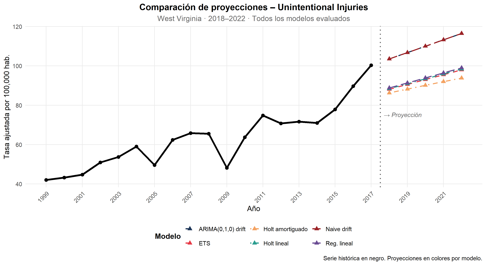
21.15.4 12.4. Justificación del Modelo Seleccionado
ARIMA obtiene el AICc más bajo de todos los modelos evaluados. Con n = 19 (años) , esta ventaja no es marginal refleja que un solo parámetro (el drift) es suficiente para describir la serie sin sobreajustar. La prueba ADF confirmó que la serie es I(1). ARIMA(0,1,0) with drift es exactamente el modelo que corresponde a ese proceso: diferencia la serie para eliminar la raíz unitaria y estima un drift de 3.24 puntos por año, consistente con el crecimiento estructural documentado durante la epidemia de opioides desde 2014. Conclusión ARIMA es el único modelo que es simultáneamente parsimonioso, válido y teóricamente correcto para esta serie. Sus proyecciones indican que la tasa de Unintentional injuries en West Virginia continuará creciendo hacia 2022, profundizando la brecha con el promedio nacional identificada en la sección 9.3.
21.15.5 13. INSIGHTS CLAVE
El poder obstinado y omnipresente de las enfermedades crónicas: Las enfermedades cardíacas y el cáncer siguen siendo las dos principales causas de muerte en un amplio período de tiempo (1999-2017). Aunque ambas lideran, las enfermedades cardíacas están experimentando un descenso constante (de 260 a 165 por cada 100,000 personas), lo que refleja mejoras en la prevención y el tratamiento, mientras que el cáncer se mantiene más estable en la actualidad, ambos están en terreno firme. Este patrón recíproco corrobora el dominio de las enfermedades crónicas en el cambio epidemiológico (Shah et al. 2019).
Crisis silenciosa de las “muertes por desesperación”: Las muertes por suicidio y las lesiones accidentales están aumentando, con estas últimas superando las 48 por cada 100,000 en 2017 y acelerándose desde 2014. Este es un efecto inverso que, coincidentemente, está fuertemente vinculado a la epidemia de trastornos por uso de opioides y a la pobreza (Daugherty et al. 2019) y contrasta fuertemente con el descenso en otros factores: también en proporción directa al llamado a los determinantes sociales de la salud.
Profundas y obstinadas brechas regionales: La tasa de mortalidad estatal es tan grave que Virginia Occidental, con 957 por cada 100,000 personas, es casi el doble que Hawái (585). Este desequilibrio común en el sur rural y en los Apalaches tiende a permanecer en el tiempo, reflejando un estatus socioeconómico más bajo y un peor acceso a la atención médica en estas áreas (James, Cossman, and Wolf 2018).
El Alzheimer emerge como un desafío creciente: El Alzheimer sube del lugar 8 al 6, con un aumento de muertes del 173%, lo que es el porcentaje más elevado entre todas las causas. Su tendencia ascendente muestra el envejecimiento de la población y presenta cada vez más desafíos en términos sociales y sanitarios debido a la escasez de tratamientos curativos (Shah et al. 2019).
El ranking es dinámico, pero el top 2 es inamovible: Dado que el stroke (de la posición 3 a la 5) baja, y las lesiones no intencionales (del puesto 5 al 3) y el Alzheimer (del 8 al 6) suben, las afecciones del corazón y el cáncer permanecen sin cambios en los dos primeros puestos. Esta movilidad manifiesta alteraciones epidemiológicas, pero enfatiza la continua preeminencia de las enfermedades crónicas.
La carga de mortalidad se ubica en ciertas zonas geográficas: El total de muertes es mayor en California, Texas, Florida y Nueva York debido a la alta densidad poblacional. Sin embargo, esto contrasta con los n índices ajustados bajos, lo que muestra la disparidad entre carga absoluta (demanda de asistencia) y riesgo relativo (probabilidad de fallecer), lo cual guía la distribución de recursos a diversas escalas.
21.15.6 14. LIMITACIONES DEL ESTUDIO
Naturaleza observacional: Los datos utilizados son de carácter observacional y agregado, por lo que permiten identificar correlaciones, pero no establecer causalidad. No es posible determinar, por ejemplo, si el aumento de accidentes se debe a la crisis de opioides o a otros factores no medidos.
Ventana temporal acotada: El análisis cubre hasta 2017, por lo que no incorpora el impacto de la pandemia de COVID-19 ni los cambios más recientes en la mortalidad por opioides. Los patrones observados pueden haber variado después de 2020.
Falta de variables demegráficas clave: El dataset no incluye desagregación por sexo, edad o raza, lo que limita el análisis de desigualdades intrapoblacionales. No podemos cuantificar, por ejemplo, la brecha de género en enfermedades cardíacas o el impacto diferencial de la crisis de opioides por grupo étnico.
Agregación nacional vs. estatal: El análisis por estado se basa en promedios que pueden ocultar heterogeneidades internas. Por ejemplo, dentro de California existen condados con tasas de mortalidad muy diferentes.
21.15.7 15. CONCLUSIONES
El análisis sobre la mortalidad en Estados Unidos (1999 – 2017) revela una evolución en el perfil epidemiológico del país: Las enfermedades cardíacas y el cáncer se mantienen como las causas dominantes, pero mientras las primeras descienden sostenidamente, el cáncer se estabiliza, mientras que emergen con fuerza nuevas amenazas como las lesiones no intencionales y el suicidio las llamadas “muertes por desesperación” que aumentan de manera alarmante, especialmente a partir de 2014, y el Alzheimer escala posiciones impulsado por el envejecimiento poblacional, todo ello en un contexto donde las disparidades geográficas se consolidan como un patrón estructural: los estados del sur y los Apalaches presentan tasas de mortalidad muy superiores a la media nacional, reflejando desigualdades socioeconómicas y de acceso a la salud que persisten a lo largo de todo el período. Estos datos requieren políticas de salud pública dirigidas a donde hay más muertes, enfocadas contra los determinantes sociales subyacentes. Implementación de un enfoque universal para la crisis de los opioides y un apoyo psicológico para respaldar la salud mental, que incluya el control de sustancias, el acceso a tratamientos. Asimismo, un el sistema de salud enfocado en la población envejecida debe mejorar, se debe fortalecer la atención geriátrica y el desarrollo de investigaciones sobre enfermedades neurodegenerativas. Los datos son claros, aunque, el perfil de mortalidad ha cambiado, las respuestas institucionales aún no se han enfocado a estos nuevos retos. Es momento de pasar de un enfoque reactivo a uno proactivo, combinar la prevención de enfermedades crónicas con acciones decisivas y así avanzar hacia un futuro con menos muertes prevenibles y mayor equidad en salud.
21.15.8 16. REFERENCIAS BIBLIOGRÁFICAS
West Virginis Government Department of Health and Human, Violence & Injury Prevention Program(WPPIPP)(https://dhhr.wv.gov/vip/about/Pages/default.aspx)